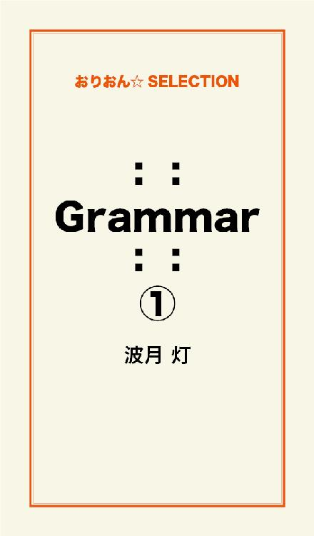
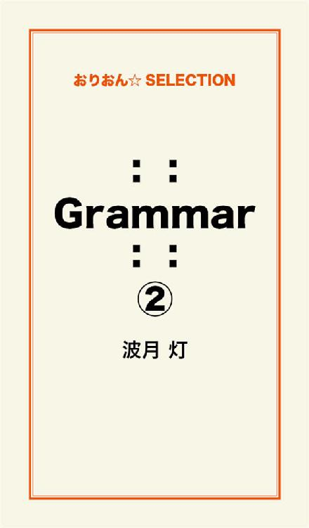
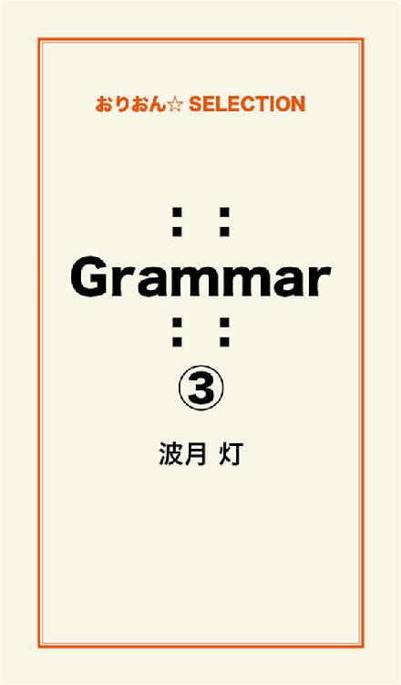

| ：： Grammar ：： 完全版 | |
| 波月 灯 | |
この本は横書きでレイアウトされています。
また、ご覧になる機種により、表示の差が認められることがあります。

トンカツ、コロッケ、やきそばパン、旨煮そば、クリームあんみつ、ツナマヨおにぎり、たいやき、チョコレート、コンビニデザート、メロンソーダ......。
月にいちど発売の少女漫画の雑誌。
集めている単行本。
アメリカのキャラクターグッズ。
手に届く好きなものはたくさんあるけれど、あたしがホントのホントに欲しいのは、誰もが羨むくらいのスリムなカラダと、それに釣り合う美人な顔。
手が届かない遠いあこがれ。
その気持ちに今日も封印するの。
だって、"おデブ"のくせに生意気でしょ？
あたしこれでも"身の程"わきまえてます。
::Grammar::
蝉の鳴き声がジリジリと響く校内に潮風が通り抜ける。
少し離れた場所からは、踏切の音と電車の走る音。
帰りのホームルームを済ませた生徒が廊下に出て来ると、せまい通路に何とも言えないムワッとした匂いが漂う。
よどんだ空気の流れは、気怠い歩き方をする生徒そのものだ。
"ペタンピタンペタンピタン"
廊下を歩くあたしの足音に、まえを歩いていたクラスの男子がばか笑いし始める。
「藤崎～、おまえの足音ゴジラみてぇ」
ゴジラと言われた足を止めて、あたしは反撃する。
「あんたゴジラの足音聞いたコトあるの？」
「いや、映画でゴジラの破壊音なら聞いたことあるけどさ。おまえの足音からゴジラ連想しちった」
まわりの男子も女子もあたし達の会話に聞き入って笑い出す。
「失礼ね！！ このか細い足になんてコト言うのよ」
「ぷっ。ばっかじゃねーの」
拳骨を作った手を上にあげて大袈裟に男子を追いかけるとまわりからの笑い声が更に大きくなる。
"藤崎鞠乃っていっつもああやってドカドカしてねぇ？"
"藤崎が走ると震度５強"
"鞠乃やっつけちゃえー"
男子も女子も笑いながら、通り過ぎてあたしもヘラヘラ笑って昇降口へ行く。
「鞠乃ぉ、あんたまたバカ騒ぎしてたでしょ？」
昇降口へ行くと、中学時代からの友達で登下校を一緒にしている芳村暁美（あっちゃん）が、短くした制服のスカートから長い脚を出して呆れ顔で立っていた。
「あっちゃんおまたせー」
「......ねぇ鞠乃、こんなこと言いたくないけど、あんたうちのクラスでなんてあだ名付けられてるか知ってる？」
２人で上履きをローファーに履き替えて昇降口から外へ出る。
出たと同時に夏の日差しが、これでもかとジンジン肌に襲いかかって、あっちゃんはカバンから日焼け止めジェルを出して腕に塗る。
あっちゃんが首もとにつけた華奢なネックレスが、鎖骨あたりに滲んだ汗で反射する。
成績ランク中の下あたりの田舎の公立高校......おしゃれをする生徒がいっぱいだ（都会に比べてポイントがちょっとズレてるけど）。
「しらな～い。なんて呼ばれてるの？」
手のひらで顔のあたりをパタパタ扇ぐとあたしはあっちゃんに聞く。
「"おかん"」
おかん......？
その言葉になぜだか、家の台所に置いてあるヤカンが頭に浮かぶ。
いつもガスコンロに置きっぱなしの、変な柄のずんぐりむっくりしたヤカン。
「"ヤカン"ってなんでー？？」
「"ヤカン"じゃなくて"おかん"！！ ......どこか似たモンかもしれないけど」
言いながらあっちゃんは、更にカバンを探って、チューブに入ったグロスを取り出す。
うすいピンクのソレは縁日の水飴みたいに見える。
ツヤツヤしたグロスを塗りながら、あっちゃんは続けた。
「体型も性格も貫禄があって"おかん"みたいだって」
「うげ～、それ酷くない？」
校外に出ると、ゆるやかな下り坂から太平洋が見えて、歩道脇のトタン屋根で作られた古い商店の軒先で暑さに、グテグテした太った猫が寝っ転がっている。
猫の真上あたりに「氷」と印刷された布旗がゆらゆら揺れて、簾を掛けた日陰では何人かの生徒がかき氷を食べているようだ。
「あのさぁ......酷いって言うより、あんたも何か努力してみれば？」
「努力？ なんで？？」
下り坂に歩幅を合わせるのは案外難しくて、急いでいるわけでもないのに、足が勝手に小走りになる。
けれど小走りになるのはあたしだけで、あっちゃんは普通に歩いてる。
「鞠乃、ズバリ聞くけど、いま体重何キロ？」
「あっちゃん！！？？ いくら親しくてもソレＮＧでは？？」
「いいから！！ 私は47キロ。鞠乃は！？」
二重まぶたに付け睫毛黒いアイライナー。
瞳を大きく見えるようにカスタマイズした顔で、あっちゃんは自分の体重をカミングアウトしながらにじり寄る。
身長１６０ｃｍのあっちゃん、47キロなんだ。
痩せてるなぁ。
「ご、55キロ」
私はオズオズと答えたけど、
「嘘だね！！ それは中学の時の体重でしょ？ あんた高校に入って太ったじゃん」
「太ってないもん！！」
「......見た目だけでもわかるって」
......やっぱバレてる？
そう、55キロは中学の時の体重。
あれから10キロ増えてしまった。
１５５ｃｍ、65キロの"おデブ"高校生、もっか着々と増量中。
「鞠乃さぁ、せっかく女なんだよ！？ 頑張って痩せようよ。痩せてかわいい服とか着ようよ」
痩せようよと言われてすぐにできるなら苦労などない。
子供の頃から大柄な体型だったあたしに、それは拷問というものだ。
「痩せればかわいいのに」
あっちゃんが口を尖らせて言った言葉がチクッとした。
だって痩せればかわいいってコトは、いまは......かわいくないってコトじゃん。
もしかしたら、痩せたら本当にそうなるかもしれないけど、あたしにはどうにもできない。
いろんなダイエットを繰り返しては失敗して、様子を見ているまわりからはバカにされるんだ。
諦めの気持ちになって誰にも迷惑かけずに、誰にも疎ましがられずに、体型を引き合いにいじめらないように、自分を楽なほうへ持って行くことを無意識に選ぶには、無駄に明るくするしかない。
太っていて性格が暗かったり、威張っていたり、図々しくしていたらだれにも相手にされなくなることくらい学んでいるから。
まだ17年しか生きてきていないけど、痩せられないアタシの人生は肉のたくさんついたカラダを張って、いつも笑っているしかないんだ。
「鞠乃ってば聞いてる？」
あっちゃんは始まったばかりの夏の暑さと、あたしに対する呆れた気持ちで顔をしかめると、クラウンの指輪をはめた人差し指であたしの唇の下あたりを軽く押す。
「セクシーな唇も勿体ない」
冬場にメンソールの薬用リップか、ピンクの色が申し訳程度につくワンコインリップしかつけたことのない唇。
ぼってりしていて自分では気に入らないのに、まわりからは"オトナっぽい唇"と言われてる。
「......あっちゃーん、指離してくれないと吸いついちゃうよ」
赤ちゃんが指に吸い付くような真似をすると、
「......鞠乃やーらしい」
あっちゃんは指先を退かした。
ちょうどそのとき、後ろから足音が聞こえてきた。
複数人の足音がバタバタと音をたて、先を急ぐように勢いよく坂道を駆けおりてくる。
「はやくしろって」
「つかまんねーよ、30円くらいで」
「あそこのおばさん意外と細かいんだぞ」
駆け降りてきたのは同じ高校の3年生の男子グレープ。
さっき通った駄菓子屋でいつもタムロしている。
「じゃあ30円返してこいよーー」
30円？？
暑くて暑くてへばりそうな放課後の通学路を、３年生グレープは元気すぎるくらいに騒いでいる
その３年生たちは校内でも目立っている"モテ系"グレープの人たち。
ちょいワル風にしていて、３年生の女子からも下級生からも好き好き光線を浴びている。
「絢（じゅん）先輩、30円がどうしたんですか？」
数秒前まであたしのほうを見ていたあっちゃんが、男子グレープの１人に話し掛ける。
椎名絢先輩。
あたしたちと同じ中学の卒業生だ。
言う事を聞かなそうなグレープのなかで、どこか優しい瞳をして、唯一話し掛けることができそうなヒト。
その容姿から絢先輩にあこがれている生徒はたくさんいる。
「駄菓子屋のおばさんがお金を30円間違えたんだ。こっちは得したんだけど、あのおばさんがそれに気付いたら怒るからにげてきちった」
絢先輩はあっちゃんに、30円の説明をする。
理由を聞いたあっちゃんはケラケラ笑い出した。
「絢２年生に笑われてやんの。格好わりー」
ほかの先輩たちが絢先輩をからかって、
「うるせーな。大体俺は30円返せっていったじゃん」
子供みたいな会話してるけど、３年生のグループは、いつもたのしそう。
先輩たちは大騒ぎしながら"じゃあね"というように手を振ると、坂道を走りさって行った。
蝉の鳴き声だけ響いて、陽炎の浮き出る歩道をあっちゃんと坂の下の駅に向かって歩き出す
「絢先輩たちって面白い」
程よくカラーリングした髪を揺らしながらあっちゃんが笑う。
先輩とハナシしたあと、どことなく嬉しそう。
「あっちゃん、もしかして絢先輩のコト好きだったりする？」
黒々した髪の毛のあたしが直球で質問すると、あっちゃんは間髪入れずに答える。
「好きっていうのとは違うよ。ファンなだけ。だってさぁあのグレープの人達とは"格差"みたいなのが大きいもん。ファンで充分」
格差、ねぇ。
例えるならアイドル歌手と一般のファンってトコか。
けど......よかった。
あっちゃんが無謀じゃなくて。
「おっと、本屋よらなくちゃ」
あたしはそのまま駅の近くの本屋に入った。
月に一度発売する少女漫画誌。
今朝、時間がなくてコンビニに寄れなかったから、学校にいるあいだずっと気になっていたんだ。
好きな漫画家の表紙の最新号を持ってレジへ並ぶと、あっちゃんはティーン向けのファッション誌を持って並ぶ。
渋谷とか原宿とか代官山とかでおしゃれした高校生がたくさんのっている本。
コスメ品や彼氏との体験とかも記事になってて、クラスの女子の何分の1かはそういう類の雑誌を学校に持ってきてる。
私たちはそれぞれ本を買うとそのまま駅に行って4両編成の電車に揺られながら二つ先の地元へ帰った。
「ただいまー」
鼠色の瓦屋根の家へ玄関から入る。
冷房が苦手な祖父母が昼間はエアコンを入れないため家中がムワッとする。
「おかえり」
蒸し暑い部屋に薄着のおばあちゃん。
テーブルにスイカの食べかけが置いてある。
古い絵柄のお皿がこの家の野暮ったさを物語る。
「鞠乃もスイカたべるかい？」
「いらなーい。部屋行く」
おばあちゃんは少し寂しそうな顔をしたけど、いまのあたしは蒸し暑い部屋でスイカをたべるより扇風機を掛けた部屋で漫画が読みたい。
二階の自分の部屋へあがって制服から、Ｔシャツ単パン姿になると扇風機を最大にまわしてカバンから漫画をとる。
途中の自販機で買ったオレンジ系炭酸ジュースのペットボトルを開けて口の中に入れながら、たのしみにしていた漫画を読む。
好きなジュース。
好きな漫画。
なににも代えがたい、至福の時間。
ベッドに横になりながらだらしない格好で読んでいたって誰にも何も言われない。
おなかのあたりの肉がベッドとカラダのあいだでびろーんと広がるけど......。
「おねーちゃんだらしなーい」
ページをめくる指先を止める。
口のなかの炭酸ジュースをむせそうになる。
中学から帰宅した妹の梨香（りんか）が、じとーっとあたしの姿を眺めていた。
「......いいじゃん自分の部屋でどんな格好しても」
「おねーちゃんだけの部屋じゃなくて私の部屋でもあるんだから！！」
梨香は机にカバンを置くと、通販で買った部屋着に着替えて、オーディオコンポからJポップを流す
「梨香、うるさい」
注意しても聞こえないフリをしている。
かわいくないったら。
鼠色の瓦屋根の家に住むのは農家の父母、３つ年上の兄と２つ年下の妹、冷房の嫌いな祖父母
７人家族ってどうなの？
二階の二部屋のうち一つはお兄ちゃんの部屋、もう一つが梨香とあたし
......お兄ちゃんは1人部屋でいいなぁ。
「おねーちゃんさぁなんか最近また太らない？ 夏だし暑苦しいよ。ダイエットしなよ」
中学3年生は姉を思いやることができないみたいだ。
それでも梨香はあたしが中学の時よりずっとやせている。
......美人でもかわいくもないけど、痩せてるってだけでこんなに口撃してくる。
お兄ちゃんも太ってなどいないから......もしかしてあたしって捨て子だったとか？（有り得ないけどね）
「おねーちゃん、おじいちゃんがお茶飲みたいって騒いでたよ～。おばあちゃんにガス使わせると危ないから、おねーちゃん淹れてあげなよ」
梨香は、お茶淹れをなぜか私になすりつけると、私の買ってきた漫画を勝手に見始めてる。
「......っとに」
あたしは下に降りて台所でヤカンに水を入れるとガス台に火をつけた。
ずんぐりむっくりしたヤカンを見ながら、オカンと噂される自分のカラダをじーっと見つめる。
ぶよぶよした腕。
パンパンな顔。
括れのない腰。
へんな柄のヤカンを見ながら、帰りのことをふと思い出す、あっちゃんの一言一言。
走ってきた３年生。
絢先輩がすきなんじゃないかって聞いたときの、あっちゃんの返事。
それからあっちゃんに無謀じゃなくてよかったって思った自分。
だってね、あんなふうに格好よくてみんなの目を引く先輩が、気にならないワケないんだもん。
......ごめんあっちゃん、変なコト聞いて。
変なふうに思って。
もしあっちゃんが絢先輩を好きだったらあたし......こんな容姿じゃ、ライバルとしてあっちゃんにならべなくて、あっちゃんと仲違いみたくなったりするのも嫌で。
誰にも言っていないあたしの秘密。
少女漫画の主人公のように、絢先輩が気になるの。
こんな体型で、ファンだなんておおっぴらに言えない。
ましてや好きなんて言えない。
絢先輩が好きなんて......言えないから......。
見ているだけでいい。
そうすればフラれて、傷ついたりしないもん。
あたしは"オカン"でいて、笑いをとっていればいいんだ。
あたしみたいなのが、先輩を好きなんて図々しいから。
ガスコンロに掛けたヤカンがシューシューと湯気を出す。
恋焦がれる気持ちを消すように、コンロの火を消す。
――あたしは笑ってなくちゃいけないんだ。
「梨香、ごはんそれしか食べないの？」
畳の上に一枚板で作った座卓。
我が家はこの部屋で朝昼晩の食事を摂る。
朝ご飯のまえにおじいちゃんが仏壇にお茶を持って行って一日がスタートする。
近所の家はフローリング材の建物に立て替えたりして洋風なリビングで食事をしているのに、我が家は築40年の純和風な家。
テーブルにならぶのは佃煮や炒り卵、インゲンのゆでたもの云々。
スクランブルエッグに、コーヒーのブレークファーストなんて似合わない。
「朝ご飯いらなーい。寝起きでそんなにたべれないし、太っちゃうもん」
梨香は部屋に不釣り合いなマグカップに紅茶だけ淹れて飲んでいる。
テレビのチャンネルは、受信料を払っているモトをとるためなのか、毎朝同じチャンネルだ。
「きちんとたべていかないと、暑さで倒れるわよ」
お母さんが言っても梨香は聞かない。
「勿体ない......。鞠乃、梨香の分たべちゃってくれる？」
梨香が箸をつけないおかずがそのままあたしのお皿に移された。
「うわー、おねーちゃんまた太るよ」
紅茶を飲み終えた梨香は、朝から意地悪なことをつぶやくと、横でモソモソごはんを食べているお兄ちゃんも噴き出した。
めざしをボリボリたべながら、おじいちゃんが会話に加わる。
「女の子はたくさんたべないとダメだ。赤ちゃん産むんだから、たくさん食べて丈夫なカラダつくらないと。梨香は骨だらけで痩せすぎだぞ。鞠乃みたいにちょっと太めで多少抜けてるくらいがちょうどいいんだ」
......うっ。
おじいちゃん、それフォローになってない（軽く凹み）。
お兄ちゃんも梨香も笑い出してしまっている。
ふん、家族だからって言いたいコト言っちゃってさ。
「ご馳走さま。さーてと学校行かなくちゃ」
あたしは何もなかったように制服に着替えて学校へ行く。
七月も半ば。
あと数日で夏休み。
海に抜ける道は朝早くから大学生やサーファーの車が通り過ぎ、近所に数軒しかないコンビニもほかの季節よりお客さんが入っている。
この町が１年でいちばん賑やかなシーズン。
夏以外はただの田舎町。
海沿いだけど観光地でもない、田畑に囲まれたのどかすぎる町。
電車だって朝夕を除けば1時間に3本しかない。
終電も都会では信じられないくらい早い。
こんな町を嫌がって、高校を卒業するとみんな都会へでてしまう。
進学するのが三流大学でも都会の一人暮らしに魅力を感じて......。
あたしの家はお兄ちゃんが地元の農業大学に進んだから、長男が家業を継ぐ事で両親も祖父母も安心している。
来年あたしがどの道をえらんでも、悪い事さえしなければ特に問題なんてないだろう。
「おはよー」
駅前まで行くとあっちゃんが待っていた。
「おはよー、あっちゃん」
「こんないい天気に、学校行くの面倒臭いね」
昨日とは違うネックレスをして、あっちゃんは気怠そうにする。
面倒臭いと言いながらも化粧はバッチリしている。
「あと三日で夏休みだし」
東の空から昇った太陽が駅のなかに日差しをさしこむ。
狭い階段を下りて、二つしかないホームの上り方面へ行って電車を待つ。
「私、夏休みのあいだ週３でバイトするんだ。細浦町のファミレスで、ウェイトレス。服とか買いたいから資金作り。......鞠乃は？」
あっちゃんいつの間にバイトの面接なんてしてたんだろう。
細浦町。
隣り町だけど、この町より少しだけあか抜けてる。
あっちゃんらしい。
「鞠乃？」
「あ、うん。あたしは別に予定ないから家の手伝いかなー」
「えー。じゃあ一緒にバイトしようよ？」
「あたしがウェイトレスの服なんて着たら、どう見たってコスプレになっちゃうよ。それに、昼間はお父さんとお母さんが畑仕事してるから、おじいちゃんとおばあちゃんに昼ご飯つくらないと」
去年の夏もそうやって過ぎていった。
多分今年もそうやって緩くすぎていく。
カタンコトン......。
カタンコトン......。
駅舎の向こう側から電車が近付いてくる音がしてきた。
同じ高校に行く子たちが改札の外からあわててホームへ走ってくる。
"ドンッ"
走ってきた人波から１人はじかれた男の子があたしの右腕のあたりにぶつかる。
「痛っ」
右側を見ると、同じ学校の制服を着た男子が、かかわるのが面倒臭いような顔をして、あたしの声を無視する。
「修、ちゃんとあやまんなよ！！」
あっちゃんが呼び止めるけど、その子は無視し続けてホームへ入ってきた電車に乗り込む
一呼吸おいて、あたしとあっちゃんも電車に乗ると、程なくして扉が閉まり走り出す。
「あいつ、感じ悪いよねー」
あいつ......修はあたしたちの同じ中学の同級生だった。
同級生の30人くらいが近場の同じ公立高校へ進学して、修もそのなかの1人。
無口だし、背丈もさほど高くないし、中学でも高校でも目立つ存在ではないけど、
「絢先輩の弟だなんて信じらんない」
言い捨てたあっちゃんの言葉に、あたしも少し頷いてしまう。
そう、修は絢先輩の弟なのだ。
絢先輩が底抜けに明るくてやんちゃなのに、修は無愛想でなんとなく暗くてなにを考えているのかわからない。
言い方は悪いけど、絢先輩に比べて影が薄い。
「絢先輩がモテるから、捻くれてるんじゃないの？」
ぶつかっても謝らない修に、あっちゃんが苛立ちを感じていたけど、すぐにほかのハナシに花が咲き、二つ先の駅に付く頃には修のコトは頭から離れていた。
（あたしは高校でもクラスメイトなんだけどね）
「なぁ藤崎、今日の女子の体育って水泳なんだろ？」
体育の着替えを持って更衣室へ移動していたら、昨日あたしをゴジラと言った男子に聞かれた。
「そうだけど？」
「ひゃっほー」
男の子たちは一様に奇声をあげた。
「やらしーわね、なに考えてるのよ」
「言っとくけど藤崎の水着姿なんて期待してないからな。俺たちはマドンナの水着姿をね～うぷぷっ」
うわっ、サイテ～。
男の子たちは廊下の後ろのほうから歩いてきた、小柄で色白な女の子に注目する。
「実和（みわ）ちゃん危険だよ。この子たちが実和ちゃんの水着姿見ようとしてるよー」
色白で小柄な女の子は、あたしの言葉に真っ赤になって、そそくさと更衣室へ入っていった。
廊下に残った男の子はため息をついたあとに、
「藤崎～なんで余計なコト言うんだよ～」
自分たちの破廉恥な計画が、マドンナにバレてしまいがっくりとする。
実和ちゃんは、その愛くるしい顔と純粋な性格と華奢なカラダで、男の子たちのあいだで"マドンナ"と呼ばれている。
実和ちゃんと週番が一緒になった男子は、ほかの男子からイチャモンをつけられるくらい。
オンナのあたしから見ても放っておけないくらい、とてもかわいい子だ。
「あんたたちのやらしい視線から、実和ちゃんを守らないとね。......授業中水泳覗いたら先生に言うからね！！」
「藤崎ゴジラ......やっぱりかわいくねーな」
うわっ。
嫌なミドルネームつけたもんだわね。
あたしは男の子たちの口撃をかわしながら更衣室へ入り、着替えをすませるとプールサイドへいった。
高校生で水泳の授業ってデリカシーのない学校だなと思う。
女の子なら入れない日だってあるし、無神経な授業だ。
スクール水着になった女子は、誰もが恥ずかしがってできるだけ物陰に隠れようとするけれど、動作を早くしろと教科担任が怒る。
校庭でサッカーをしている男子が、チラチラこっちをみているのも手にとるようにわかるのに、なんで学校でこんなに恥ずかしい思いしなくちゃいけないんだろう。
「じゃあ今日はクロールで25メートルのタイム測ります。出席番号順にコースに入って。泳げないヒトは、水に顔をつけて息継ぎする格好をしながらゆっくり歩く事」
はぁ？
なに言ってるの（呆）。
強引に進める変な内容の授業に、女子は困惑の表情を隠せない。
それでも水のなかにはいると、暑かった教室に比べて、不思議と気持ちよくなる。
「次の人達用意して」
教科担任に用意を促されてあたしたちの列がコースにならぶ。
「鞠乃ちゃん、クロール泳げる？」
隣りのコースから、か細いカラダをした実和ちゃんが心細そうにして、あたしを見つめた。
子鹿や子ウサギのような瞳になんだか守ってあげたくなってしまう。
「私、水がこわくて、水面に顔つけるのも怖いの......」
見ると実和ちゃんの手が小刻みに震えていた。
「実和ちゃん大丈夫？」
あたしが実和ちゃんに問い掛けたのと同時に先生がスタートのホイッスルを鳴らした。
バシャバシャバシャ
とりあえず泳ぎだしてみたけど、手を震わせていた実和ちゃんが気になって水面を蹴っていた足を止めて、コースの途中で立ってみる。
泳いできたほうをゆっくり振り返ると、水面に顔をつけるのを極度に怖がる実和ちゃんが、カチンカチンになって立ち尽くしていた。
「実和ちゃん......」
ほかのコースの子たちは次々と泳ぎ切って、教科担任も実和ちゃんとあたしにはやくしろとまくし立てる。
「......先生～！！ 実和ちゃん具合がわるいみたいだからあたしが保健室へ連れていきまーす」
咄嗟にそんな嘘をついて、あたしは実和ちゃんのところまで泳いでいくと、そのまま実和ちゃんの手を引っ張ってプールから出た。
「鞠乃ちゃん、ごめんね」
プールから上がった実和ちゃんが、本当にすまなそうにあたしにあやまるから、
「いいっていいって。あたしも水泳好きじゃないし。......むこうに行って休もう？」
あたしたちは着替えて保健室へ移動した。
実和ちゃんを保健室へ連れていき、保健の先生には適当な理由を話したら、実和ちゃんを休ませてもらうことになった。
あたしはそのまま廊下に出て、みんなより先に教室へ戻っていようと歩く。
保健室へ行く途中、実和ちゃんは子供のときに溺れかかって、水がこわくなったと教えてくれた。
トラウマを乗り越えるのはむずかしいことだろう。
ペタンピタンペタンピタン......。
廊下を歩く自分の足音。
それにまじって校庭から戻ってきた男子の声が聞こえる。
「実和ちゃんの水着姿、やっぱりかわいいなー」
「マドンナがおよげなくても絵になるよな」
「それより藤崎ゴジラ、あいつの水着姿見た？」
！！
男子たちはあたしが近くにいるのも気付かずに会話を続ける。
「あいつのバタ足、でっかい水飛沫」
「河童が泳いでるみたいだったな」
「寸胴だし」
言いたい放題言ってケラケラ笑ってる。
「んでさ、3階の教室から絢先輩が女子の水泳見てたよな」
じゅ、絢先輩が！？
「マドンナとゴジラの痛いツーショット、見てて笑えたろうな～」
「ウケる～」
自分の足元が根がでたようになってその場から動けなくなった。
言いたい放題言ってた男子の声と足音が小さくなって、ふだんなら言い返すくらいするあたしなのに、絢先輩が見てたってすごく恥ずかしくて。
身の程わきまえてるはずなのに、心が声にならない悲鳴をあげていた。
タタタタタ......。
教室に戻ったはずの男子が1人走って戻ってきた。
何か忘れ物をしたみたいで、急いで取りに行く姿。
「あ......」
走ってきた男子はあたしに気付いてこっちを見た。
白い半袖シャツと紺色の単パン姿の修だった。
「......」
「......」
何もハナシなんてしないで通り過ぎたけど、
「今朝、急いでてぶつかってごめん」
修は小声でそう呟いたけど、その時のあたしは絢先輩に見られてしまった痛いツーショットのことしか考えられなくて、そのことで顔が赤くなってしばらくそこから動けなかった。
「やーっと夏休みだぁ」
終業式を終えて教室に戻るとみんなが口々に騒ぎ出す
憂鬱になるはずの通知表も見なかったフリをしてカバンにしまう。
明日からしばらく朝寝坊も夜更かしもできる。
グ～タラなあたしが待望んだ夏休みがようやくはじまる。
「藤崎、九月には痩せてこいよな」
帰り際またもや男子がからかうけど、
「あたしが痩せたらあんたたちがあたしに夢中になって毎日うるさくなるでしょ？ だから敢えてこの体型でいるの」
「自惚れるなよ。痩せたっておまえなんかに惚れねーよ」
おまえなんか......って言葉がひっかかるけどムキになるのはやめた。
あたしはそのままクラスの女の子たちと談笑をしながらふざけていた。
「鞠乃ちゃん」
かわいらしい声にみんなで振り向くと、実和ちゃんがきていた。
「このあいだの水泳の時はありがとう」
「あぁ、気にしてないよ～。あたしもサボりたかったから」
私がヘラヘラ言うと、まわりの友達はあたしの体型を引き合いにだして笑いハナシに変える。
実和ちゃんはあたしたちがふざけて笑っている横で、安堵しながらも申し訳なさそうな表情も時折見せた。
「私水に顔つけられないなんて弱虫で、みんなに迷惑かけちゃって......」
マドンナの言葉を聞きもらさなかった男子がそばに寄ってきて、
「藤崎なんて、みんなよりCO2を多く排出して地球に迷惑かけてるもんな」
とあおりはじめる。
「ちょっと～ヒトをトラックみたいにいわないでよ！！」
みんなが笑いあって帰り支度をはじめていると、一緒に喋っていた女子の1人がコソっとあたしに耳打ちした。
「鞠乃、気をつけた方がいいよ」
「？」
彼女の言葉の意味がわからないけど、そのままハナシを聞いた。
「実和ちゃん......。悪い子じゃないけど甘やかすと、なんでも鞠乃にたよるようになってくるよ」
実和ちゃんかあたしに？？
「それはないんじゃない？ だって実和ちゃんはあたしより頭だっていいし顔だっていいし明るいし」
「そうだけど、......油断してるとヒトのいい鞠乃が使われそうで」
あたしは一瞬目がテンになったけど、
「有り得ないってば」
あたしが断言すると、彼女もそれ以上なにも聞かないで、放課後あたしはクラスの女子とあっちゃんと一緒にコンビニでアイスを買って海辺で食べて帰った。
海の前の道を３年生の集団が通ってちょっとだけドキッとしたけど、そのなかに絢先輩の姿はなかった。
あの痛いツーショット以来、絢先輩を見掛けていない。
ホッとしているような寂しいような......。
でもきっとあたしのコトなんて、教室の窓から一瞬見えたデブにしか過ぎないだろうな......。
「鞠乃？ どうしたの？」
急に無口になったあたしの様子に、あっちゃんが気付いて声を掛けてきた。
「......アイスもうひとつ食べるか考えてたの～」
にかっと笑ってそう答えると、爆笑が起きた。
あっちゃんはあきれた顔してたけど、こうやって茶化していれば身の程知らずな恋はバレることなんてないから。
こうやって守っていかなきゃいけない......。
体型が原因でまわりから崩されないように......。
夏休みのあいだ、絢先輩を見れないのは寂しいけど、無謀に当たって砕けて失恋するより、このまま心のなかだけで見つめていいたい......。
それがあたしのオトメゴコロ。
波の音をききながら、溶けてベタベタ指先についたアイスを一気にたべた。
"RRRR......RRRR......"
部屋でゴロゴロしていたら机に置いてある携帯が鳴り出した。
蜩の鳴き声に負けないように響く高い音。
"音声通話 あっちゃん"
昼間一緒にアイスを食べた、あっちゃんから電話だった。
地元の駅前で別れてからまだ数時間しかたっていないけどなんだろう？
アメキャラのストラップをつけた携帯を机から取る。
「もしもし～」
『鞠乃！ ぉどぉしょうー！！』
ふだんわりとクールで動じないあっちゃんが受話器を通して何やら動揺している。
「あっちゃんどうしたの？」
部屋で雑誌をみている梨香が聞き耳をたてる。
『よ......呼び出された』
「？ 呼び出されたって学校？？」
あっちゃんテストで赤点ギリギリだったからぁ。
『ちがーう』
あたしの問い返しにあっちゃんは激しく抗議した。
「......だって呼び出されただけじゃ意味わかんないもん」
『......』
「......？ あっちゃーん？ もしもし？？」
少し息を整えてからあっちゃんは話しはじめた。
『因幡先輩に呼び出された！！』
切迫したあっちゃんの声。
多分言ったあとに顔をつっぷしたんじゃ......。
因幡......先輩......。
頭の回線が少し混線して、少しの間をおいて一本の線に戻ると、
「因幡先輩！？ 呼び出し！？ なにどうして！？！？」
こんどはあたしが動揺してしまった
因幡先輩って......３年生のあのグレープなかの1人。
ワルぶっても悪くなりきれていない、背の高いわりと硬派な先輩。
時々１年生の女子がキャーキャー言ってるとジロッて睨む。
だから、あのグレープのなかではいちばん喋りづらそうな雰囲気。
「因幡先輩から呼び出したって......あっちゃん何かしたの！？」
『しらないわよー！！ さっき家に電話かかってきて５時に鳴海駅前に出てきて......って』
鳴海駅はあたしたちの地元の駅。
さっきもそこで電車を降りて帰ってきたけど......。
それに５時にきてって......いま４時40分じゃない！！
『どぉしょうー......すっぽかしたらあとが怖いよー......ねぇ鞠乃私どぉしょう』
「そんなコト言っても......」
梨香は雑誌に興味を示さずに、あたしの横で受話器からのハナシに聞き耳をたてはじめる。
梨香の頭をピシッと叩いて、受話器から離すけどめげずに張り付いてくる。
「とにかく時間に間に合わないとヤバいでしょ......。急いで行きなよ」
『鞠乃ついて来て』
泣き出しそうなあっちゃんの声が耳を通る。
「な、なんであたしが。一緒についていったら、余計ヤバいんじゃ」
『だってこわいんだもんーー！！ 鞠乃ついてきてよぉ』
「あ、あっちゃぁん」
泣きたいのはあたしのほうだよ。
こうしていたってどんどん時間が迫るばかりだし......。
「もう！！ ......そばでみてるだけだからね！！」
『鞠乃ぉ』
「なにかあったらすぐ逃げるよ！！」
『勿論』
けど、逃げるって言っても、あたしの体型で走ってもすぐ追いつかれちゃう？？
変に冷静な自分は好奇心で一緒について来ると言った梨香を追いやってチャリに乗ると、家のまえの水田地帯の舗装道を、急いで自転車をこいであっちゃんと待ち合わせた駅の裏側へ急いだ。
「来てる？」
駅の物陰から隠れて表側の改札あたりを見ると、因幡先輩の姿があった。
「......来てるよ」
因幡先輩だけじゃなくて、何人かの先輩もまわりに来てる。
狭いロータリーを町営バスが走っていき、排気ガスの匂いが鼻をつく
「とりあえず、1人で行ってみてなにかあったら大声出して。ね？」
カチカチになったあっちゃんにあたしは声を掛ける。
「う、うん」
ロータリーの時計は５時ジャスト。
あっちゃんは足を竦めながらも、因幡先輩のほうへ歩き出した。
チラチラまわりをみていた先輩も、あっちゃんに気付いて少しずつあっちゃんに近付く。
先輩がなにかを話し始めて、あっちゃんがこわ張った顔でハナシを聞いているけど、なにを話しているのかはあたしの場所から聞き取れない。
因幡先輩は時々顔を下に向けたり頭を掻いたり、でも学校で見せるような怖い顔は全然してなくて、むしろ緊張してるみたいで、あっちゃんも緊張した顔をくずさないけど、２人ともしばらくそのままで、長い時間が過ぎたように感じたけど、実際には10分弱がたった頃、因幡先輩が急に笑顔になった。
と同時に、様子をうかがっていたほかの先輩たちが奇声をあげて、２人のまわりを取り囲んだ。
「！！ あっちゃん！！」
奇声をあげてまわりを囲むなんてあっちゃんになにかする気だ！！
あっちゃんは顔を下に向けてる。
「あっちゃん！！ 逃げるよ！！」
あたしは先輩たちに囲まれたあっちゃんのもとへ走って、あっちゃんの手をつかむ。
駅から出てきた人たちは、ロータリーで奇声をあげる男子高校生とドカドカ走っていく太めな女子高生に関わりたくないらしく、足早に通り過ぎて行く。
掴んだ手を引っ張ってダッシュで逃げようとしたけど、あっちゃんはその場に固まって走ろうとしない。
「はやく！！」
あたしだけ焦っていてすぐ脇で、３年生たちがニヤニヤしている。
チカラを入れてあっちゃんを引っ張ったら、
「違うんだ！！」
それまで黙っていた因幡先輩があたしに話し掛けた。
「何が違うんですか！？ お......大勢で下級生を呼び出して囲んで。３年生だからって何やってもいいワケないじゃないですか！！」
あたし内心はビクビクしながらも必死に言った。
だって、怖がってたら逃げられないもん。
「誤解だって」
勢いつけて言ったあたしに因幡先輩が慌てる。
「誤解？ なにが誤解なんですか？」
「変なコトしようとしたんじゃなくて。俺、芳村のコトがまえから気になってて、......つまり、告ったんだよ」
芳村？？
......あ、あっちゃんのコトか。
って、えぇ！？
こ、告った！？
慌ててあっちゃんを見ると黙ったまま頷いて、それからゆっくり口をひらいた。
「私、正直言って、因幡先輩のことはどんな人なのかよく知らないし、でも先輩たちのグループはいつもかっこよくてみていたから......いきなり彼女とかは無理だけど、トモダチとして......。最初はトモダチとしてでよければって、返事したの」
真っ赤になったあっちゃんと、どことなく照れている因幡先輩。
「紛らわしい真似してごめん。俺ビビリだから、仲間にもついてきてもらったりして」
因幡先輩は学校で見せる硬派なイメージとは違って、恥ずかしがり屋な様子であっちゃんを気に掛ける。
夏の夕方の告白。
学校でモテてる先輩が、あっちゃんの彼氏になったなんて。
「すごーーーい」
さっきまでの警戒心をどこかへやってあたしは、因幡先輩の付き添いできたほかの先輩たちと一緒にはしゃいでしまう。
「鞠乃やめてよ」
はずかしそうにするあっちゃんだけど、好きって言われてうれしくないハズないよね？
いいなあっちゃん、格好いい彼氏ができて。
「因幡ー」
駅前に因幡先輩を呼ぶ声が響いて、もう1人グループに加わる。
「おせーよ絢！！」
あとから来て、３年生の先輩たちのあいだに入り込んだのは、素人目にもセンスのいいデザイナーズブランドのＴシャツを着た、絢先輩だった。
「わりぃ。途中で原チャリがパンクして」
両方の手のひらを大きく開くと、絢先輩の手のひらは真っ黒に汚れていた。
パンクの修理をしていた手。
......う～ヤバいヤバすぎる。
まっすぐ正面を見れない。
絢先輩めちゃくちゃ格好いい！！
あたし先輩の手のひらの汚れになりたい。
「で、その顔を見るとうまくいったみたいだな？」
因幡先輩の顔を覗き込む絢先輩。
「......まぁな。トモダチからってコトで」
因幡先輩が照れながら言うと、
「よかったじゃん」
そして絢先輩はあっちゃんのほうをむいて、
「芳村、こいつどう仕様もない奴だけど根はいい奴だから。仲良くしてやって」
「......は、い」
あたしは、うまく返事をできないあっちゃんより、絢先輩が気になっちゃって。
絢先輩の声、こんなに近くで聞いたのははじめてだ。
クラスの男子とひとつしかトシが変わらないのに、あの子たちの声が子供っぽく思える。
高校２年だし、男の子はみんな声変わりしてて、それなりにオトナな声なんだろうけど、絢先輩の声は同級生と違ってなんだかエロ格好いいボイス。
そんな声がちかくで聞こえるから鼻血でちゃいそう。
（あたし変態？？）
「藤崎」
次に絢先輩は、エロチックなオトナボイスであたしの名字を呼んだ。
びっくりしちゃって、心臓が歌い出してるみたいにパクパクしてる。
緊張して返事ができないあたしは、顔だけ絢先輩のほうへ向ける。
「因幡が芳村のこと泣かせたら、俺たちに言ってね」
う......。
うわーうわー！
"俺たちに言ってね"って、絢先輩からそんなコト言われるなんて！
中学も同じだったけど、はじめてハナシをした絢先輩。
あっちゃんに降り注いだ《Love》があたしにも《お零れ》をくれているみたいで、先輩が"藤崎"って呼んでくれたのが信じられなくて。
......
......
......あれ？
先輩、いままで1度もあたしとハナシしたコトないのに、どうしてあたしの名字知っているんだろう。
「じゅ、絢先輩」
「ん？」
「どうしてあたしの名字を知ってるんですか？」
あたしはなるべく丁寧に聞いた。
先輩が不快にならないように、先輩に気持ちがバレないように、みんなにも気持ちがバレないように。
「藤崎も芳村も中学から修とタメじゃん。知ってるよ」
......そっか。
弟と同級生なら名前くらい自然に覚えるか。
ハナシしたことのない絢先輩が、あたしの名字を呼んだから、もしかしたら絢先輩あたしのこと少し......気に留まってた？って一瞬期待しちゃったけど、そんなコトあるわけないよね。
「藤崎？」
「あ......いぇなんでもありません」
期待は淡く消えたけど、１分間に２回も名字呼ばれちゃった。
ダメだ、あたし完全に恋する乙女モードがハイテンションになってる。
あの無愛想で陰気臭い修が、絢先輩の弟だったことにも感謝してしまう。
あいつが先輩の弟でよかったよ。
それから１時間くらい、あたしとあっちゃんは３年生の先輩たちと駅前で色々ハナシをしてから家に帰った。
あっちゃんが明日からはじめるバイト、夕方あがりだから帰りに因幡先輩が迎えに行くことになったりで、短い時間にいろんな"まさか"の展開が広がって、あっちゃんを取り巻く"事件"だったのに、あたしは頭のなかから絢先輩の声が離れなくて。
「鞠乃」
家の近く、チャリを押しながらあっちゃんが話し掛ける。
「......告られたからって、付き合うとかでよかったのかなぁ」
「なんで？」
いつもガツンとしてるあっちゃんなのに弱気なテンション。
「好きっていわれてから好きになることって、できると思う？」
あっちゃんの足元、ビーチサンダルにラインストーンが光ってる。
並んで歩くあたしの足元は......おばあちゃんに大型流通店でかってもらったスニーカー。
なにかあったら逃げる気だったから走りやすい靴にしたんだけど（あっちゃん、ビーチサンダルで走る気だったの？？ ......なんとなく言えないけど）、絢先輩に会えるってわかっていたら......梨香のサンダルを無理矢理履いてきたのに（あたし、足のサイズだけは小さいのよね）。
「３年の先輩のコトは格好いいって思っていてファンだったけど......恋とかとは違ったから。けどなんでか、"ごめんなさい"って言えなかったんだ。私ってずるくない？」
「あっちゃん......」
あたしから見ればモテてる先輩から告られるなんてすごくハッピーなことだけど、あっちゃんは自分の気持ちと先輩に対してとても慎重に考えてる。
その姿があたしのなかの浮かれた気持ちに自戒と反省をかけるけど、
「両思いより、片思いから始まる付き合いのほうが多い気がする」
あたしは自分のなかの気持ちをあっちゃんに伝えてみる。
「因幡先輩いいヒトそうじゃん。あっちゃんのコトあんなに気遣ってくれて、バイトだって迎えにいってくれるなんて。あっちゃんだって因幡先輩が嫌いだったらＯＫしなかったんじゃない？ ......幸せなんだから贅沢言わないの」
あたしは誰かとつきあったことなんてないし、恋愛も漫画のなかでしか知らないからこんな言葉しか言えないけど。
「......そうかな」
「そうだよ」
稲の穂が夕方の風に少し頭を垂れて歩道を渡る藁の匂いを嗅ぎながら、この夏はなんだか楽しくなりそうって勝手に想像した。
ぐらぐらぐつぐつ。
沸騰する鍋から冷麦をザルに移して素早く水でヌメリを流す。
水に濡れる手があんぱんみたいにパンパンで全然オンナらしくない。
ぶっとい手で包丁を握って刻んだ薬味。
シソもネギも柚子も全部自分の家で採れたもの。
蛇口から流れ続ける水は井戸水で、夏でもキンと冷たい。
「おじいちゃん、おばあちゃん、梨香～おひるごはんできたよ～」
いつも食事をする部屋。
簾で日差しを遮っているけど、風のない日は部屋のなかがムワムワ暑い。
「え～！！ また冷麦ぃ～......午後から塾でおなかすいちゃうじゃん。っていうか飽きた」
二階から降りてきた梨香はテーブルの上を見ながら開口いちばんにそう言った。
「じゃあ梨香がごはん作ってよ」
蒸してから冷ましておいたトウモロコシもテーブルに出して、冷蔵庫からスイカを出す。
「私受験生だもん」
中３の梨香は都合が悪くなると受験を楯にする。
姉妹喧嘩をする横で、おじいちゃんとおばあちゃんは冷麦をすすってる。
期待に胸はずんだ夏休みも、かれこれ一週間が過ぎる。
けれど期待とは裏腹に、特にかわったこともなくいつもと同じ夏休みを過ごしている。
「ただーいまー」
暑さから開け放ってある玄関から、早朝からバイトに行っていたお兄ちゃんが帰ってきた。
「おかえりお兄ちゃんいま冷麦茹でるね」
食べていた箸を止めると、
「俺、昼飯あるからいらない」
と右手に持っていたコンビニ袋をテーブルに置いた。
袋の中身を出すと冷製パスタとドリアがでてきた。
「あー！！ お兄ちゃんだけずるーい！！ ねぇどっちかひとつ冷麦と交換して？」
梨香が自分の冷麦を差し出すと、
「両方俺が食う」
お兄ちゃんも譲らなかった。
お兄ちゃんも梨香もヒトの気持ち考えないでイラッとするなぁ。
「鞠乃、冷麦おいしいよ」
おばあちゃんがフォローしてくれる。
「夏はさっぱりしたものがいちばん食べやすい」
おじいちゃんもそう言いながら冷麦を食べた。
お父さんとお母さんは午前中家から離れた畑に行っている。
もう少しすればおひるごはんを食べに戻って来るだろう。
夏は朝早くにトラックで畑に行って、お昼ごはんをたべに戻って、いちばん暑い時間は家で休んで、そのあと夕方になるともう一度畑に行く。
そのまま市場へ行く時もあるから、夕飯もあたしがつくる時がある。
もっとも、お昼も夕飯もつくるようになったのはこの一年くらいで、それまではずっとお母さんやおばあちゃんに甘えていた。
「午後から出掛けるから、帰りにハンバーガー買ってきてやるよ」
梨香にそういいながら、電子レンジであたためたコンビニ弁当をお兄ちゃんは食べはじめた。
「鞠乃は？ 期間限定バーガー買ってくるか？」
お兄ちゃんはあたしにも気を使ったけど、
「......いい」
冷麦をたべながらなんとなく断ってしまった。
「おねーちゃんも頼めばいいじゃん。冷麦たべてたって痩せないんだし。それにさー、毎日毎日冷麦とかじゃ本当に飽きるよ。たまにはお昼ごはん買ってきてよ。外のごはんたべたい」
ムカッ！！
明らかに調子に乗りすぎる梨香の言葉に、あたしは箸を置いた。
「梨香、後片付けしといて」
「えー！！ 私これから塾......」
「お皿洗う時間くらいあるでしょ！！ あたしだって暇じゃないの！！」
梨香の言葉を遮って荒々しく言い捨てると、あたしは合皮のバックに文庫本と漫画だけ入れて、玄関でスニーカーを履いた。
「いまのは梨香が悪いぞ」
おじいちゃんが梨香をたしなめているのが聞こえたけど、あたしはそのままチャリで外へ飛び出した。
途中白いトラックに乗ったお父さんとお母さんに会ったけど、曖昧にごまかして通り過ぎた。
そのまま町でいちばん賑やかな駅前の商店街を自転車で通ると、化粧品も扱う薬屋のおばさんが新色口紅のポスターを貼っていた。
最近テレビで見掛けるモデルさん。
紅葉を薄くしたような色の口紅をつけて、どことなく不機嫌な顔をしている。
ぽっちゃりした口紅に不機嫌な顔......。
あたしがもう少しスリムだったら、いまふて腐れている顔も彼女みたいになるかな。
なんて図々しいかもしれないけど。
すれ違った中学生のキャミ姿に目がくらむ。
いいな......あたしも痩せてたらあんな格好したいな。
それで梨香のこと見下してやるの。
「あ、SAYAのポスターだ！！」
口紅のポスターを見た中学生が、一緒にあるいていた子とポスターにかじりつく。
「綺麗だよねSAYA」
「あたしもSAYAみたくなりたーい」
SAYA。
中学生も共感しちゃうこのモデルさんって、幾つくらいなんだろう。
「今月の"DADA"の表紙SAYAだよね」
「マジ？ あとでコンビニで買って帰ろっと」
短いスカートから出た足を闊歩させて、中学生は通り過ぎた。
薬屋のまえに残ったのは、SAYAのポスターと不細工なあたし。
こんな田舎町でも、かわいい子や綺麗な子はたくさんいる。
さっきの中学生も、クラスのマドンナ実和ちゃんも、梨香だって......憎たらしいけど人並みにかわいい。
かわいい子をターゲットにしたファッション誌だってたくさん売ってる。
女子大生やＯＬ向けのDADAという名前の超有名雑誌も、田舎町の本屋やコンビニにだって置いてある。
本は大好き。
漫画も小説も大好き。
でも......ファッション誌は立ち読みするのも怖い。
こんな醜いカラダでファッション誌なんて。
どうせ見たってあたしなんかが綺麗になれるワケないし、痩せれるワケもないし。
額から滲んだ汗を腕でゴシッと拭いて、チャリに乗る。
まえから来る男の子たちがすれ違い際にあたしの体型をチラ見しながら笑って行ったけど、梨香にこんな気持ちわからないよね。
「鞠乃？」
背後から聞き覚えのある声に呼び掛けられる。
小花柄の青いオールインワンに白いシャツ。
ラメってるサンダル。
籠素材のバック。
明るい髪の毛と、いつもの声。
背後から声をかけたのは、あっちゃんだった。
「あんた、なんだか怖い顔してるけど......どーしたの？」
ホッとするあっちゃんの声。
それから、あっちゃんの横には、単パンとサンダルとコラボＴシャツ姿の因幡先輩。
「り......梨香にいぢめられたぁー。男の子たちにわらわれたぁー」
絢先輩と仲のいい因幡先輩がいて緊張してるハズなのに、なぜかわからないけど、あっちゃんに会ったら張り詰めていた糸が急にたるんで、そしたら
「ちょっ......鞠乃！？ どうしたの？？」
勝手に涙が出てきて、勝手にハナミズまで出てきて、
「うっぐ......うっ......うっ。どぉせ冷麦しか作れないし......うっ......うぐっ」
言葉も支離滅裂で、
「鞠乃おちついて。とにかくどこか入ろ？」
しゃくりあげるあたしを、あっちゃんも、知り合って間もない因幡先輩も優しくなだめてくれて、ちかくにあるマイナーなファーストフード店に入った。
黄身色のポップカードにオススメフードの名前が書かれ、ヤニで汚れた壁に貼られている。
パステル系の模様がプリントされた壁は、一昔まえの"お洒落なお店"という感じ。
この町はこういうお店ばかり。
天井のエアコンの吹き出し口からの風が揚げ物油の匂いを立ち込める。
「おまたせ」
先に席についていたあたしたちに、因幡先輩がトレーを二つ器用に運んできてテーブルに置く。
「ありがとうございます。あ、お金いくらですか？」
合皮のバックに手を突っ込んでお財布を取ろうとすると、
「お金なんていいよ。甘いモノでも食って落ち着きな」
そう言いながら因幡先輩はあっちゃんのとなりに座った。
トレーにはメロンソーダひとつと、アイスコーヒーがふたつ。
揚げたてのポテト。
因幡先輩はあたしにメロンソーダを渡して、あっちゃんにアイスコーヒーを渡す。
もうひとつのアイスコーヒーは因幡先輩の分。
「......ありがとうございます」
モソモソっとお礼を言ってストローに口を付ける。
あたしのすきなメロンソーダ。
あっちゃんが因幡先輩に教えたんだ。
一週間前あんなにぎこちなかった２人が、いまは見ていてとても自然。
けど、学校であれだけモテる因幡先輩に彼女が出来たというコトは、夏休み中でも女の子たちのあいだに瞬く間に広がって、"因幡先輩の彼女"の姿を見るために、あっちゃんのバイト先には同じ高校の女子が偵察に来たらしい。
一部のやっかんだ子たちは、ウェイトレスとしてバイトをするあっちゃんに、客という立場を使ってクレームをつけたりしたようで、あっちゃんにとっては大変な一週間だったみたいだ。
「......大体の理由は解ったけどさ」
お昼に梨香と揉めたハナシをくわしく話し終えると、あっちゃんが口を開いた。
「前々から思ってたんだけど、鞠乃いつまでカラダに理由つけて逃げてんの？」
いきなり石をぶつけられたような言葉が落ちてきた。
口のなかのソーダが喉を冷たく伝う。
「......逃げてるって......なに？」
自分の目が少し吊り上がるのがわかる。
因幡先輩はあたしたちの不穏な流れを止めずに、静かに見ている。
「確かに梨香は我儘言い過ぎだから、あんたがキレるのもわかるよ。昼ごはんのことは梨香が悪い」
アイスコーヒーに指したストローを持て余しながら、あっちゃんは続けた。
「けどさ、そんなに体型に過敏になるくせに、なんでいつもそれを笑いに変えるの？」
ど真ん中に入る言葉に、足元が少し震えた。
「笑いになんてかえてない......」
図星っているあたしは声をうわずらせて、あっちゃんに返事をかえすけどあっちゃんはそのままつづけた。
「鞠乃、あんたのいいトコロは、明るいトコロだけど、だからって自分の体型からかわれたときに自爆したりすることないじゃん。ヘラヘラ笑って、ウケ狙って、そーゆーの痛い」
「痛い......？」
「そうだよ痛いよ......あんた本当は泣いてるんでしょ？」
「な......泣いてない！！」
「......心のなかで泣いてるんでしょ」
あっちゃんは強い視線であたしを見つめた。
こういう時のあっちゃんの目ヂカラは、正直ヤンキーのみなさんより怖い。
「自分いじめて楽しいわけないじゃん。素直になりなよ、卑屈になるのもやめなよ」
「！！ 卑屈になんかなってないよ！！ ......あっちゃんはそうやって色々言えるけど、カラダだって痩せてるし顔だってそこそこいいし、カッコいい先輩に告られて幸せだからあたしの気持ちなんてわかんないんだよ。あたしみたいにデブじゃないからわかんないんだよ」
梨香と同じようなコトを言ったあっちゃんにショックをうけて、早口で言い返したけど、
「それが卑屈なんだよ。わかんない？」
バンッとテーブルを叩いてひとつだけ溜め息をつくと、こんどは静かにあっちゃんが話し出した。
「かなり厳しいことをいうけど......。愚痴なんていくらでも出るし、太っている理由だっていくらだって後付けできるんだよ。楽なことはいくらでもできるの。けどさ、理由や言い訳ばかりして、結局都合よく逃げてるんじゃん」
「あっちゃん......」
「鞠乃、痩せるために努力した？ 多少のダイエットはしただろうけど、あんたのハナシ聞いてると、運動は面倒臭いとか続かないとか言ってるくせに、楽して痩せようとしたり、なにもしないで"あたしの気持ちなんてわからない"とか、そんなことばっかりじゃん」
棘だらけの言葉。
まばらなお客さんや、手の空いた店員が、あたしたちを見てるのがわかる。
あたしがなにか言い返すのを待っているのがわかる。
言葉は出なくて頬が熱くなる。
「正直あんたが太っていても痩せていても、私は鞠乃のことが友達として好きだよ。ただ、あんたがなにかある度に体型のことで自分の気持ちをごまかしたり、あきらめたりするほうに流れるから......。だったら......一度くらい痩せるのもいいと思う。......あんた次第だけどね」
ずるい。
すごく頭にきてすごく悲しいコト言われても、最後にそんなふうに言われたら、あたしだってあっちゃんのこと友達として最高に好きだよ。
あっちゃんはその言葉を言い終えるとあとはなにも言わなくなって、あれだけまくし立てたのに黙り込んじゃって、けど怒ってるんじゃなくて、少しだけ間があいてあっちゃんが窓の外に目線を逸らすと、因幡先輩が話し始めた。
「俺は、女の子の容姿とかのことはよくわかんないけど、いきなり何キロとか痩せるって言うのも大変だしさ、目先のモノを変えてみるのもよくない？」
「目先のモノ？」
因幡先輩の言葉にあっちゃんが目線を戻す
「たとえば服とか」
服......。
水色の安いＴシャツとジーンズ。
このまえも履いていたスニーカー。
オシャレなあっちゃんとは大違いの垢抜けない、地味な格好。
家にいたまま飛び出してきたとはいえセンスない。
改めて自分のダサさに恥かしくなって、下ばかり向いてしまう。
因幡先輩はそんなあたしを見て言葉をつづけた。
「けなしてるワケじゃないから誤解するなよ、俺もコラボＴシャツとかだし、藤崎の服装も普通にかわいいと思うよ。かわいいから、もう一捻りすれば格好よくなるじゃん」
......こんなダサい服でオカンやヤカンみたいな容姿のどこが。
きっと自分の彼女の友達が醜くて、哀れんで慰めているんだ。
なにも悪くない因幡先輩を少しだけ意地悪に思って、じっと手のひらをみつめて黙り込んでしまう。
「小物使うだけで違うじゃん」
不意な言葉に顔を上げる。
「小物？」
因幡先輩は頬を指先でポリッとして続けた
「絢の受け売りだけどさ、ちょっと物足りないときに小物をひとつ足すだけで違うって。ベルトとか靴とかどこか一箇所ポイントおくといいんだって」
絢先輩の受け売りというポイントを置くという考え方に、目から鱗がおちそうになるけど、
「......ベルトや小物だって値段高いし、あたしそんなにおこづかいもらってないから。バイトもしてないし、結局なにも変わらないんです」
卑屈を引きずっているみたいに反対意見ばかり出るのがなさけないけど、
「お金かけるだけがオシャレじゃないよ」
因幡先輩のかわりにあっちゃんが答えた。
「むしろ安いモノをうまく取り入れるから、オシャレなんじゃん」
あっちゃんは立ち上がると、カラになった紙コップをゴミ箱に捨てて、あたしを手招きした
因幡先輩はあっちゃんの様子を見て、先に帰ってしまった。
「因幡先輩......怒ったのかな」
バーガーショップから出て自転車を引きながらあっちゃんに話し掛ける。
「大丈夫、怒ってないから」
短いあいだにあっちゃんはすっかり因幡先輩の彼女が板についていた（変な言い方だけど）。
あたしはそのままあっちゃんに誘導されて、大通りを渡ると、意外な場所に連れて来られた。
その場所は誰もが知っている、奇抜な外観をしていて、全国展開しているお店、
【１００円ショップ】
あっちゃんがあたしをつれていたのは、１００円ショップだった。
「１００均って、強い味方なんだから」
あっこちゃんは慣れたように店内にはいって、色々なモノを手にした。
「ほら。こんなに可愛くて１００円」
あっちゃんが手にしたのは、派手すぎず地味すぎないベルトだった。
「いかにも"１００均"を誇張しないで、定番なものを選べば、全然安っぽくならないんだから」
その言葉は私を魔法に掛けるようだった。
あっちゃんはベルトをひとつ買うと、タグをとってもらい、あたしのウエストにつけた。
「ベルトひとつで引き締まって見えるよ。裾もロールアップにすれば足長く見えるし」
ベルトを通し終えると、あたしの足元に屈んでジーンズの裾を数回折ってくれた。
店内のガラスに写った自分の姿を見ると、ベルトひとつ加えて裾を短くしただけで、すこしだけ体型も絞まってみえた。
「服の柄とかカタチとかは好みが違うから、意見なんてできないけど」
あっちゃんはポソッと呟くと、あたしの顔をまじまじと見ながら続けた。
「私なんて鞠乃に比べて胸がないし、唇だって薄くてコンプレックスだらけだよ。コンプレックス持ってても、それをカバーして少しでも綺麗になりたいって思うじゃん。鞠乃は気持ちしだいで今よりずっとずっと綺麗になれると思うよ」
言うとあたしの背にまわって立って、
「いつも自信なく猫背でいるの勿体ないよ」
中学時代からの友達は言うこともキツいけど、心の底からの優しさを持っていてくれる。
彼氏ができてどことなく先を歩いているあっちゃんに、自分はどこかで面白くない気持ちも持っていたのかもしれない。
だけど彼女の"まわりを考える気持ち"はどんなときも曲がったりしないんだ
１００円ショップから出ると、キリのいい場所であっちゃんと別れて1人になり、あたしはそのまま家には帰らず、少し寄り道をして町の小さな本屋へ寄った。
あたしたちが子供の頃からある古びた本屋。
ガラスの手動ドアを開くと、まだ昼間なのに電気をつけていても、どこか薄暗く感じる狭い店のなかを、あたしにとって未知ともいえるコーナーへ入る。
ファッション誌のコーナー。
雛段に立ててある色々な雑誌を恐る恐る手にする。
まわりに誰もいないか、こんなおデブがファッション誌をみていて図々しいと思われないかと、小心者のあたしは気にしながら。
数冊の本を見た頃、魅力的なモデルさんが表紙を飾る雑誌に手が止まる。
【DADA】8月号。
薬屋さんに貼られたSAYAがあのポスターと違った顔でキマっている。
"気持ちしだい"
SAYAみたいに全体が綺麗になれなくても、唯一羨ましがられている唇くらいは......真似できる、かな......？
あたしはDADAを人目につかないようにレジへもっていくと、はじめてファッション誌を買う。
白髪がまじった髪をひっつめたレジのおばさんが、茶色い紙袋に本を入れてくれてパリッとした袋の感触を指に感じながら両手で持って外へ出た。
カシャン。
自転車の鍵をといて、来る時に通った薬屋のまえを買ったばかりのDADAの入った袋をカゴに入れてほんの少し前向きになった気持ちで、家までの道をゆっくりこいだ。
〈２巻につづく〉

「梨香、あたしのネイル使った？」
６畳の部屋を扇風機から作られる風にネイルの匂いが混じっている。
「ちょっと借りた。これどこのネイル？」
小さな爪にパールが入った、水色と薄い緑の混じったネイルを綺麗に塗って梨香が両手をヒラヒラさせる。
「勝手に使わないでよ」
「うるさいなぁちょっと借りただけなのに。おねーちゃんのドケチ」
ヒトのものを勝手に使ってケチって言うのはどうなんだろう。
１００円ショップでベルトを買った日、家に帰ってからDADAを見ていたらいままで封印していた世界に引き込まれてしまった。
フワフワした布地のトップス。
足を綺麗に見せるカタチのボトム。
踵を少し高くしただけで格好よく見える靴。
どれもこれも目がくらんだ。
だからって、あたしみたいなおデブはそんな格好はできないって現実に引き戻されそうになったけど、もしかしたら大きいサイズでも流行の服とかあるのかもって思って、お兄ちゃんにＰＣを借りて検索したら、けっこうな数のサイトがヒットした。
これまで通販や大型衣料店の大きいサイズのコーナーで、サイズを選んで着れる服だけを買ってきていたけど、センスがよくてそこそこ値段も手頃な服がたくさんあることに気が付いた。
サイトだけでなく、電車で少し先の街まで行けば、そういう服専門のお店があってあたしと同じような体型でもオシャレをしている店員さんが配属されていることも知った。
かといって、お財布の中に服をたくさん買えるようなお金が入っているわけでもないから、手の届く金額で綺麗なネイルを買ってみた。
夏っぽい色に一目見て惹かれて、町のドラッグストアーで買ったネイル。
化粧品メーカーのチープコスメシリーズ。
ちいさな瓶に入った海の色みたい。
「鞠乃ー」
階段のしたからお母さんの声がする。
「なにー？」
「あっちゃんが来てるよ」
ネイルの瓶をドット柄の小さなポーチにしまい、引き出しのなかに片付けて、あたしは階段を降りた。
下に降りると、お父さんとおじいちゃんが畳の上に寝そべってテレビで高校野球をみている。
そのまま玄関へ行くと、顔を赤くしたあっちゃんがいつもみたいに綺麗に化粧してサンダルを履いて立っていた。
「外暑かったー」
あっちゃんはバックからハンカチを出して顔を押さえる。
「あっちゃん今日バイトは？」
「休み」
八月に入って暑さは日増しに強くなっている。
こんなに暑いのに、自分のカラダが痩せないのが腑に落ちないけど。
「鞠乃、ネイルぬってるじゃん」
控え目に塗ったネイルにあっちゃんはすぐに気付いた。
「綺麗な色だね。似合ってる」
ファミレスでバイトをしているあっちゃんの爪には、ネイルなんて塗られていないけど、爪の表面は綺麗に磨かれている。
すごいな......。
本当に綺麗にするってこういうコトなんだ。
あたしいままでかなりガサツすぎたかも。
ゴジラって言われても仕方ないなぁ。
「鞠乃、今日暇？」
「暇だよ......あそぶ？」
「一緒に宿題やらない？」
宿題！
暇なのに全っっ然終わってない。
まぁ毎年のコトなんだけど。
「うんじゃあ片しちゃおう。うちでやってもいいけど梨香もいてうるさいし......図書館行く？」
あたしの部屋は扇風機しかないから、暑くて勉強どころじゃない。
（お父さんクーラー買ってくれないかなぁ）
この町の図書館も、ここ数年は地球温暖化防止と電気代節約で、温度設定がぬるいんだけど、あたしの部屋よりはずっと涼しくて快適。
あっちゃんはなにか含み笑いのような顔をして答えた。
「図書館より涼しくて綺麗な場所があるんだけど」
「そんな場所この町にあったっけ？」
思い当たるのはスーパーのフードコートくらいだけど、夏休みだし騒がしいよね。
「絢先輩の家に行かない？」
サラッと言われた言葉に飛び上がるくらいの驚きが心に広がる。
じゅ......じゅじゅ絢先輩の家ー！？！？！？
驚きに言葉が出なくなる。
「鞠乃？ どうかした？ 顔が赤いよ？？」
あたしの気持ちを知らないあっちゃんは、その場に固まるあたしに呼び掛ける。
「だ......だって絢先輩の家って、なんでいきなりそうなるのかと思って」
あっちゃんはあぁと小さく声を洩らして、コトの説明を始めた。
「因幡先輩も宿題終わってなくて、ほかの先輩たちも宿題終わってないんだって。それで絢先輩の家に集まることになって、私も誘われたんだ。"女の子1人で居づらいだろうから、友達連れてきていいよ"って絢先輩に言われて」
......う、うわー★
素直に喜びたいけどやっぱり緊張しちゃうよ。
いきなり家なんて。
「どうする？ 行く？」
あっちゃんの問い掛けに躊躇していたら、お母さんが廊下を歩いてきた。
「２人ともそんなところにいないで部屋に入れば？」
......そうだよ。
なにもいきなり家に行くことなんてないよね。
あっちゃんには悪いけど宿題はうちでやればいいんだ。
「あのさ......」
あたしがあっちゃんに言おうとしたと同時に、あっちゃんがお母さんにしゃべり始めた。
「私たち、これから学校の先輩の家に行くんです」
お母さんは一瞬目をパチクリさせたけど、
「あらそうなの？」
なんて呑気に返事を返している。
あたしが否定しようとしても、あっちゃんとお母さんが会話を進めてしまう、
「よそのお宅にお邪魔ならおみやげもっていかなくちゃ。西瓜冷やしてあるからそれ持って行きなさいね」
「わーい。おばさんちの西瓜甘くておいしいんですよね。いただいていきます」
お母さんっっ！
あっちゃんもっっ！
絢先輩の家に西瓜なんて恥ずかしくて持って行けないよー。
「ねぇ、西瓜は持つの大変だし、落とすともっと大変だから、途中でお菓子でも買って行こうよ」
あたしがそう言うと、ハナシをきいていたお父さんが持ちやすいようにビニール紐で編んである袋に入れはじめた。
どうしてみんなで余計なコトをするの！！
浮かない顔をしているあたしを尻目に、お父さんとお母さんとあっちゃんは西瓜を囲ってしゃべってる。
「ほら鞠乃、西瓜持って。遅くまでお邪魔しないで早く帰りなさいよ」
お母さんに西瓜を手渡されて渋々受け取ると、物陰から様子を見ていた梨香がケラケラ笑い出した。
「タヌキが西瓜持ってるみたい～」
梨香の言葉にお父さんもお母さんも呆れながらも吹き出したけど。
「梨香、少し会わないあいだにあんたの顎のラインも丸くなってきてるよ」
あっちゃんが鋭く突っ込むと、梨香は慌てて顎のあたりを触って閉口した。
「じゃあいただいて行きまーす」
西瓜をもらってにこやかに手を振るあっちゃんと一緒に、宿題を詰めたバックを肩に掛けて、海からの潮の匂いが微かに漂う外へと出た。
「やっぱり西瓜ってダサくない？ お菓子にしない？」
緑色に黒い縞模様こんな冴えないおみやげなんて、貰ったほうも迷惑じゃないかな。
食べたあとの始末も面倒臭いだろうし。
あたしが諦めも悪くブチブチ言っていると、あっちゃんは髪の毛をかき上げながら、
「男の子の家に行くんだしお菓子より西瓜でいいんじゃない？」
そんなふうに答えた。
確かにそうなんだけど、たとえばクラスの男子の家に行くなら西瓜で充分だけど、絢先輩に渡すものが家にあった西瓜って（しかもうちの畑でとれたモノだし）あまりに雑すぎる気がして......。
水田脇の舗装された細い田舎道。
まっすぐ伸びる道の先の青い空は果てしなく高い。
頭の上をこれでもかと照り付ける日差しに鼻のアタマから汗が出る。
しばらく歩くと海岸へ出る道と交わってあたしたちはそっちへと曲がる。
海岸の近くの小高い場所に五軒くらいの民家が並ぶ。
古くからこのへんに住む人の家は、瓦屋根の純和風が殆どだけど、その場所に並ぶ家々はここ何年かに建った新しい家が多くて、洗礼されたセンスの洋風な家ばかり。
「あった、ここだ」
そのなかの一軒の家のまえに、あっちゃんが立ち止まる。
白い門に名字のプレート。
"SHIINA"
そこだけ見るとまるで外国に来たような家。
絢先輩が住んでいる家だ。
実は1人でこっそり見に来たこともあるんだ。
ただ、目の前にあってもあたしなんか近付けないって感じるような見えない壁があって、そっと遠くから見るだけだった。
隠れて見つめる窓の向こう側に絢先輩がいるって思うと、胸がドキドキしたっけ。
勿論それはいまも同じで、ドキドキドキドキしちゃう。
あっちゃんの指先がインターフォンのボタンを突っ突く。
"ピンポーン"
呼び鈴が鳴ってほんの数秒沈黙があったけど（沈黙のあいだは心臓の鼓動がむちゃくちゃ早くなった★）、
"はーい"
なかからオンナのヒトの声が応対した。
声の感じからして、多分絢先輩のお母さんだ。
"芳村といいます。絢先輩いらっしゃいますか？"
"ちょっと待ってね"
絢先輩のお母さんがやさしく言うと、少し間が空いてからステンドグラスを埋め込んである玄関のドアが開いた。
「おぅ芳村、入って来いよ。藤崎も」
ドアを開いた向こう側から絢先輩が気さくにあたしたちを呼び寄せる。
「お邪魔しまーす」
あっちゃんは門から家の庭に入って、玄関までスタスタ歩いて行ってしまう。
玄関の脇に何台かの自転車が置いてあって、そのなかの一台には"Inaba"と書かれたシールが貼ってあった。
「......なにやってんの藤崎。はやく来いって」
「あ......、はい。おじゃまします」
緊張して足がもつれそうになる。
眺めてばかりいた絢先輩の家に入れる日が来るなんて......。
芝生が綺麗に栄えた地面に洋風な四角い飛び石。
脇に枕木が埋めてある。
広いだけで農家そのものの造りの自分の家とは大違い。
「入れよ、みんな来てるから」
玄関のドアの前に立つと、家のなかからいい香りがした。
そのへんで売っている芳香剤の匂いじゃなくて、形容できないけれど独特の柔らかい香り。
絢先輩の家の香り。
う～、この香りを小瓶に詰めて持ち帰りたい（やっぱりあたしは変態だ★）。
絢先輩に促されて家のなかに入ると、玄関は広い吹き抜けになっていた。
白い壁に油絵が飾ってある。
「はい」
水色の生地に薄い銀のビーズや刺繍糸で柄を施されたスリッパを、絢先輩がだしてくれた。
スリッパとよぶにはオシャレなカタチのルームシューズ。
なにかにつけて緊張しちゃうよぉ。
「ありがとうございます。絢先輩、あの油絵はお父さんが描かれたんですか？」
サンダルを脱いでスリッパを履くあっちゃんが絢先輩に聞いた。
「そう。親父の描いた絵......俺には何が芸術なのかわかんないけど」
......お父さんの描いた油絵......？？
２人の話している言葉が分からずにいたら、あっちゃんがコソッと教えてくれる。
「絢先輩のお父さんって画家なんだって。因幡先輩が言ってた。絢先輩の家ってずっと海外暮らしだったけど、何年かまえに日本に戻ってきてこの町に家を建てたんだって」
「そうなんだ......」
中学も同じだったけど全然知らなかった。
絢先輩の弟の修は同じ学年だけど、中学に入学した日に転校生として現われて、けど外国から来たなんて説明がなかったような......。
そんなことを考えて廊下を歩く。
うちの黒光りする廊下よりはるかにセンスのいい薄茶色い床材。
普通のフローリングとはなんとなく違う。
さすが芸術家の家。
「おふくろー、因幡の彼女とその友達。２人とも中学も高校も同じで修の同級生」
絢先輩はリビングらしい部屋のドアを開くと、なかにいたお母さんに話し始めた。
リビングからあたしたちのほうをゆっくり向いた絢先輩のお母さんは、ミディアムウェーブヘアーで、ノースリーブの白いシャツにネックレス、飾り気はないけれどセンスのいいベージュのカプリパンツの姿だった。
見た感じ、うちのお母さんより少し年上っぽいけど、全然若い！！
雑誌からでてきたセレブのような姿に、あっちゃんもびっくりしている。
「まぁ修の同級生なの。あの子難しい子でしょ？ だけど母親の私が言うのも変だけど、根はいい子なのよ。絢とも修とも仲良くしてあげてね」
にこやかに話してくれる絢先輩のお母さんに、あたしとあっちゃんは「はい」と返事をして、おみやげの西瓜を手渡した。
「立派な西瓜ね。おいしそう。わざわざありがとう。あとでいただきましょう」
センスの悪いおみやげを、絢先輩のお母さんは喜んでうけとってくれた。
「おふくろ西瓜がすきなんだよ」
因幡先輩やほかの先輩が集まって宿題を片している部屋へ行くと、絢先輩はそう教えてくれた。
「絢のかあちゃんっていつ見ても若いよな。うちのババァなんてクソブス！！」
因幡先輩がシャープペンをまわしながら言って、あっちゃんは因幡先輩の頭をペチンと叩いた
あの日梨香と喧嘩してふて腐れていたあたしに、オシャレを教えてくれた因幡先輩。
やんちゃなだけでもなく、この先輩たちのグループはみんなが相手を思いやって優しい。
あたしたちの学年は個々に勝手でバラバラだから、３年生がうらやましい。
「そういえば修は？ 宿題終わってるの？」
ほかの先輩が絢先輩に聞いた。
「あいつは夏休みに入って4日くらいで終わらせたよ。昨日は家でゴロゴロしてたけど、今日はどっかいったんじゃねー？」
立膝で数学の計算をしながら、くだけた絢先輩の姿。
こんな姿を近くでみれるなんて......緊張度ＭＡＸで宿題が手に付かない（......こじつけ？）。
「うちの家族って、俺が中３の春に日本に戻ってきたじゃん？ 俺はどこにでもすぐ馴染めるけど、修は馴染めないみたいでさ。文化や習慣や言葉ひとつ取っても。だからいまもあんなふうでオヤジもおふくろも心配してて」
弟のハナシをしながら絢先輩は計算を一題解いてしまった。
「にぃちゃんも心配してやれよ」
因幡先輩がチャチャを入れながら絢先輩の解いた数学を写す。
絢先輩はほかの先輩の解いた漢文の宿題を写している。
あたしとあっちゃんも、おたがいに写し合いをして夕方までにかなり宿題を片づけることができた。
「絢～、みんなで西瓜いただいたら？」
宿題を終えると、絢先輩のお母さんがみんなをリビングに呼んだ。
あたしとあっちゃんは西瓜を切るのを手伝いにキッチンに入ると、モダンなキッチンにまたしてもびっくりしてしまったり......。
絢先輩のお母さんが、外国製の包丁で綺麗にカットした西瓜を涼しげな食器に乗せてリビングのテーブルに置いた。
みんな一切れずつ西瓜を手にすると、集まった３年生たちの視線が、なんとなく絢先輩に集まっている気がした。
気のせい？
「ただいま」
そこへちょうど修が帰ってきた。
「修、あなたも手を洗って西瓜いただきなさいな」
絢先輩のお母さんが修に呼び掛ける。
修は西瓜をチラっと見てから、３年生たちのように絢先輩を見てそのあといつもの陰気くさい表情をした。
「この西瓜、どうしたの？」
修の問い掛けに、
「それね鞠乃の家の畑で採れた西瓜なの。おいしいからおみやげにもってきたんだよ」
あっちゃんは満面の笑みで答えたけど、修はあっちゃんに、それからあたしに、思いもよらない言葉を返した。
「兄貴、西瓜苦手なんだよ」
......え！！
絢先輩、西瓜が嫌い......！！？
うそっ！
だからほかの先輩たち絢先輩のことを見ていたの！？
「修！！」
「修！！ おやめなさい！！」
絢先輩と先輩のお母さんは同時に声を上げて修を窘めたけど修は続けた。
「訪問先に食べ物を持って行くなら、好き嫌いくらい知ったうえでじゃないと、ありがた迷惑になるだけだろ。あんたらそれくらいもわからないの？ 兄貴だってなに無理して食べようとしてるの？ ......無理して食べるくらい、この２人のどっちかを好きなの？」
！！
「修っ！！」
「おまえなに言ってんだ！？」
「修！！ 失礼でしょ！！」
胸を抉る修の言葉を、絢先輩や因幡先輩やほかの先輩、絢先輩のお母さんが厳しく窘めて、言い過ぎの修をあっちゃんも睨んだけど、でも修の言う通りだよ。
好きなヒトに苦手なモノを押しつけちゃうなんて。
ごめんなさい先輩、嫌いなモノを押しつけて。
「あっちゃんも鞠乃ちゃんも気にしないで、ね？」
先輩のお母さんがあわててフォローするなかで、あたしは、
「絢先輩、無理させちゃってごめんなさい。......あたし......帰ります」
「ちょっ......鞠乃ぉ～」
あっちゃんがあわててあたしを止めたけど、あたしは挨拶もそこそこに絢先輩の家を出た。
絢先輩のお母さんが、
「修！！ 鞠乃ちゃんに謝りなさい！！」
って、叱っているのが聞こえた。
玄関先から門を出ようとしたら、
「藤崎」
後ろから呼び止められた。
絢先輩の声。
でも振り返ることができない。
「逃げるのかよ」
先輩にしては乱暴な言葉......勇気を振り絞って後ろを向くと、それは絢先輩の声ではなかった。
後ろにいたのは修だった。
「悪かったわね。へんなモノ持ってきちゃって」
「別に。けど藤崎は、兄貴のことが好きなんだろ？」
「ちょ......何言ってるのよ！！」
修の言葉がダイレクトに入る。
なんで修にそんなこと言われないといけないの！？
それになんで修がそのことをしっているの！？
「藤崎、時々うちを覗いてたろ？」
「の、覗いてたんじゃないもん！！ 眺めてただけだもん！！」
あたしムキになって言い返すけど、修はあたしが絢先輩の家を時々見ていたことに気付いていたんだ。
「プールのときだって、兄貴に醜い水着姿見られて落ち込んでたでしょ？」
修の言葉に顔面が蒼白してくる。
西瓜のことはあたしが悪かったけど、だからって言っていいことと悪いことがある。
「修......それ以上言ったら......許さないから！！」
言い負かされたくない。
こんなエゲツないことを言い負かされたくない。
「ふん」
修はハナで笑いながらあたしに言葉を投げ掛けた。
「兄貴を好きでも無駄だよ」
修は意地悪そうな目付きであたしを見た。
上から下まで見て、微かに皮肉っぽい笑顔をつくる。
「あたしがデブだから無理って言いたいんでしょ」
「体型とかじゃないよ。そのへんは兄貴物好きだから。それより、藤崎気付かないの？ 兄貴、好きな子がいるんだよ」
アニキ、スキナコガイルンダヨ。
頭のなかが真っ白になった。
先輩に......好きな子が、いる......。
「それくらい普通気付くんものじゃないの？」
好きな子がいる......。
......いてもおかしくなんてないのに、いままでなんでそれに気付かなかったんだろう。
"カチャッ"
玄関のドアが開いて帰り支度をしたあっちゃんが出てきた。
絢先輩のお母さんも見送りに出てきて、
「修、鞠乃ちゃんに謝ったの？」
厳しく言ってくれたけど、修はそれ以上なにも言わずに家のなかに入っていった。
「あの子ったら......嫌な思いさせてごめんなさいね。......修はあんなだけど、よかったらまた遊びに来てね」
絢先輩のお母さんはあたしとあっちゃんを気遣ってくれた。
「いぇ。私たちこそすみませんでした。また寄らせてください。おじゃましました」
あっちゃんが明るく返事をして、あたしたちは絢先輩の家を出た。
門を出てすこし歩くと、
「鞠乃、なんだか顔色わるいけど......修になんか言われた？」
いつもより無口なあたしを、あっちゃんが心配して覗き込む。
「ヘーキ。なんでもないから」
そう、なんでもない。
あんなことなんでもない。
「嘘つき。手震えてるよ」
言葉とはうらはらにあたしの手は小刻みに震えていて、ネイルをつくた指先もブルブルしている。
「言ってごらんよ。なにがあったの？」
「あっちゃん......」
この夏休みに二回目のあっちゃんに泣き付く出来事。
あたしは歩く足を緩めながら、時々立ち止まりながら修に言われた言葉を、あっちゃんに聞いてもらった。
「あいつ！！ そんなひどいこと言ったの！？」
細い田舎道を車が通り抜けて、重たそうなエンジン音が少しずつ消える。
あっちゃんはあたし以上に怒っていた。
「まったく何様なの！？ あんな優しいお母さんとお兄さんがいるのに修はなんであんなに捻くれてるのよ」
あたしは、このまえのファーストフード店にいたときみたいにうつむいたままだけど、あの時と違うのはあっちゃんがあたしにではなくあたしを傷つけた修に対して怒っていること、それから、ハナシをしているなかであたしが絢先輩に抱いていた思いをあっちゃんにも話していること、絢先輩を好きでいることは誰にも話さないって決めていたのに、あっちゃんに打ち明けてしまった。
それでも中学時代からの友達のあっちゃんは、私がずっと好きなヒトを教えなかったことに怒ったりなんてしなかった。
教えなかったことを怒らずに、さっきの修の態度のことをあたし以上に怒ってくれている。
それだけで気持ちも落ち着いてきた。
「けどさ、先輩に好きな子がいるなら、あきらめるしかないよね......」
「......」
あっちゃんも、そのことには助けになる言葉を見つけ出せなかった
家の近くまで一緒に歩いてくれて、そのままいつもみたいに別れた。
その夜のあたしは昼間のことを忘れたくて、テンションを高く保って、梨香が見たがっていたミュージック番組もあたしがテレビ主導権を握ってバラエティ番組に変えてしまったりした。
「おねーちゃんの意地悪！！ タヌキ！！」
なにを言われても修のどぎつい言葉に比べたら、全然痛くなんてなかった。
「２人ともそろそろ寝なさい。夏休みだからって夜更かししないのよ」
絢先輩のお母さんに比べて、冴えない格好をしているうちのお母さんに小さな雷を落とされて、あたしと梨香は部屋へ行って布団に入った。
扇風機をまわしただけの部屋は相変わらず蒸し暑くて、梨香も文句をこぼしていたけど、やがて規則正しい寝息をたてはじめた。
精神的に高ぶってしまったあたしは布団のなかで目をつぶったけど。睡魔は一向に押し寄せてくれない。
こんな夜は夢すらみないでぐっすり眠りたいのに、頭には絢先輩のことがたくさんよぎっていく。
先輩は、いつもグループのなかでわらっていて、誰に対しても分け隔てなくやさしくて、後輩からもしたわれていて、運動している姿も格好よくて、背もたかくて、センスもよくて、誰かのことを悪く言ったりとか決してしなくて、どこにいても、たとえどんな格好わるい立場になっても格好よくて、こんなおデブなあたしにもやさしくしてくれて......。
秘密にしていた想いは、いつの間にかこんなに深いものになっていたのだろう......。
そんな大好きな絢先輩の......好きな子ってどんな子だろう。
同じ年かな？
大人っぽいのかな？
かわいいのかな？
明るい性格なのかな？
アタマ、いいのかな？
守ってあげたくなるような子なのかな？
痩せてるのかな......？
"兄貴西瓜嫌いだよ"
『藤崎ゴジラー』
修と同じ学年だろ？
名前くらいしってるよ。
"兄貴好きな子がいるよ"
藤崎なにやってんの。
『藤崎が歩くと震度５強』
"兄貴好きな子がいるよ"
トゲトゲした修の言葉と、クラスの男子のからかう言葉と絢先輩の優しい声があたまのなかをぐるぐる廻る......。
『おかん』
カラダの端々についた醜い肉。
もしこの肉がなかったら、あたしはいろんな言葉にひるまずに絢先輩に告ったりするのかな。
絢先輩に対する気持ちだけじゃなくてほかのことにも消極的でなんていなくなるのかな。
『藤崎痩せたよな』
『痩せたらなんだか綺麗になったよな』
『あいつあんなに可愛かったっけ？』
そんな言葉言われるようになるのかな......。
モソッ。
幸せな空想をしていたら、となりに寝ている梨香が寝返りを打つ。
「おねーちゃん......タヌキぃ。やせればぁ......ムフフっ」
憎たらしい寝言を言ったまま、罪のない顔で眠る妹。
もー、姉がこんなに傷ついてるのに、かわいくないっ！！
けど。
......おねーちゃん痩せたらぁ......。
痩せたら......どうなる？
さっきの空想がまたアタマに広がる。
絢先輩、こんなに辛い片思いしててもなにも気付かずにあの家にいるんだよね。
すきな子のことを思って。
同じ時間をあたしも絢先輩も相手にわからないように気持ちを募らせて......。
それに、絢先輩は来年卒業してしまうんだ。
片思いでも学校でみつめていられたけ、次の春がきたらもう学校ですれ違うことなんてないし、どこか遠い場所に進学してもう会えなくなるかもしれない。
そしたら、先輩と会える時間は残りあと僅か。
思いを伝えても伝えなくても、来年の春で......。
先輩。
絢センパイ。
苦しいよぉ。
みているだけでいいって思っていたのに、なんでこんなに苦しいんだろ。
こんなに苦しいなら、せめて卒業するまでに先輩に近付きたいな。
友達でいいからつながっていたい。
先輩がどこか遠くに行ってしまっても友達としてつながっていられるなら、いつか気持ちが実るときもくる？
チカヅキタイ。
いまよりもっと先輩の近くに、近づきたいよ。
「修、どうしてあんな失礼な態度を取ったりするの」
西瓜の皮を片付けながら母さんが呆れた顔をして俺に言う。
「せっかくのお土産に、ひどい言い方して。あなたのそういう部分お母さん嫌よ」
母さんはいつまでたっても俺を子供扱いする。
俺だけじゃなくて兄貴に対してもだけど。
物心つく頃まで海外で暮らしていた自分には、この国の人付き合いに息が詰まることがある。
自分と他人を保守的に守るために嘘をコーティングしたり、本心を言えばわがままだと言われたり。
母さんや兄貴はそれに合わせるのがうまくても、俺はどうしてもそれに馴染めない。
「聞いてるの？ 修」
「......聞いてる。......いちいちうるさい」
些細なことに反抗したくなるのはなんでだろう。
きっとこの暑さのせいだ。
母さんがブツブツ言う横で、兄貴の友達が数人俺のことを"万年反抗期"とはやし立てる。
俺は聞こえないフリをして、二階の自分の部屋へあがった。
田舎の海辺の町へ来て数年が過ぎた。
生まれたのはこの国だけど、その頃の記憶はない。
アルバムには、兄貴と俺が両親に抱き抱えられて東京タワーのまえで撮られた写真やカートに乗った俺が、代々木公園を母さんと散歩している写真がファイルしてある。
海外へ行く前、俺たち一家は東京に住んでいたそうだ。
だったら東京に戻ればよかったのに、終の住処を田舎町に構えた父さんの考えていることは、高校生になった俺にもよくわからないまま。
「修、入るよ」
ドアを軽くノックして兄貴が部屋に入って来る。
「......なに？」
「藤崎も芳村も悪気があったわけじゃないんだから、これからはあんな言い方やめろ」
......うんざりする。
「またその話？」
あからさまに面倒臭いという表情を出すと、兄貴は更に続けた。
「しつこく言いたくないけど、おまえの態度、かなり酷かったから」
俺には兄貴がなんでそこまで怒るのかがわからなかった。
本当のことを素直に言っただけなのに......。
そう、兄貴が素直に言う時と、俺が素直に言う時とでは、まわりの受け止め方も全然違う。
それは同じ血を分けた兄弟でも性格やモノの考え方が１８０度違うからだろう。
人当たりがよくて、容姿もそこそこよくて、その気になればアタマもそこそこ良い兄貴。
兄貴は自分の自慢でもあり、反面コンプレックスでもあった。
兄貴のまわりにはいつもたくさんの友達がいて、どんなに兄貴がキツい言葉を言っても仲間は兄貴を裏切ったりしない。
それは兄貴の持って生まれた人格がまわりを引き寄せるのだろう。
俺は仲間を思って言った言葉が、時に相手に不快感を与えて友達と呼べる人は全然増えずに減る一方。
同じ環境で育った兄貴と俺がこんなに違う性格になることは、多分両親も想像すらしなかっただろう。
「......兄貴、芳村って因幡さんと付き合ってるの？」
なかなか部屋から出ない兄貴に別の話をふってみる。
「夏休みに入ったときに因幡が芳村に告ったんだ。因幡、芳村のことずっと好きだったから......」
兄貴は俺の傍らに立って話した。
「因幡さんは芳村のどこが好きになったんだろう」
「飾らないところみたいだよ。媚びたりしないところとか」
「ふーん」
芳村暁美は気が強そうで、俺にとっては苦手なタイプ。
あんなガサツで気の強いオンナが好きなんて、世の中うまくまとまるようにできている。
だとしたら、あの藤崎鞠乃のことを好きになる風変わりな男もいるってことだから、世の中本当にわからない。
藤崎ってどうしてあんなふうに笑っていられるんだろう。
デカいカラダで校内をバタバタ走ったり、たいして楽しくもないハナシでケラケラ笑ったり、体型のことをいわれてくやしかったり悲しかったりする筈なのに、それを表立てないで笑いにかえて、良い方へと流れをつくっていく。
自分で流れをつくれるのは兄貴と一緒で、ある意味すごいことだと感心する。
何もかも自分にプラスにしようとするあたりが、見ていていちいちムカツクんだけどさ。
「修？ ......もしかしておまえ芳村が好き？」
兄貴が俺のことを覗き込む。
「ちっ......ちげーよ！！ アホか。ガサツなオンナは興味ないし」
俺があわてる様子をみて、兄貴は笑いながら部屋から出ていった。
いつも余裕の表情である兄貴。
年だってひとつしか違わないのに、どうしてあんなに大人なんだろう。
大人な兄貴に想いを寄せる女子が学校にたくさんいる。
藤崎も表面には出さないけど兄貴が好き。
それだけモテる兄貴に、彼女がいないのは兄貴が片思いしているから。
兄貴は気付いていないだろうけど、兄貴が誰を目で追っているのかくらい弟の俺にはわかりきっている。
兄貴も藤崎鞠乃も、はたから見ていればわかりやすい。
俺は、自分の気持ちを持て余していて、はたから見れば、きっとそれが捻くれて映るんだろうけど。
いまの俺なにをやっても兄貴には劣るけど、自分が持っているモノで唯一兄貴に優越感を抱いてるものがあるよ。
だれもそのことに気付いていないけど。
ただその優越感も手放すときが近いんじゃないかって自分で感じてきている。
きっと、どんな結果をひきだしても兄貴は穏やかなままなんだろうな。
それが悔しくて、だけどそれに救われるから、やっぱり俺は兄貴を超えられない。
「鞠乃、もうたべないのかい？」
お昼ごはんを済ませるとおばあちゃんに聞かれた。
「最近食欲がなくて」
食器をシンクにもっていくと、お兄ちゃんがバイトから戻ってきた。
いつもみたいに外で買った食べ物を持って。
"とんかつ弁当"
お弁当屋さんの袋から見えたそれがものすごく食べたいけれど、いまは我慢。
我慢すれば、そのうち食欲だって本当に落ちるハズだ。
絢先輩の家に行ってから数日、あの翌日から微力ながらダイエットをはじめた。
いままでは一週間と持たなかったけれど、ラブパワーってすごい......。
これで九日目。
夏休みも八月の後半に入ろうとしている。
あのあとお盆に集まった親類にも散々体型をからかわれて、例年通り梨香と比べられて作り笑いをしたけれど、いまのうちに笑えばいい。
来年の今頃は絶対驚かせてみせる。
"兄貴好きな子がいるよ"
修の言葉はいまでも火傷のように胸をヒリヒリさせるけど、あの夜決心したんだ。
絶対痩せてやる。
痩せて綺麗になってやる。
綺麗になってスリムになって自分に自信つけて、絢先輩と釣り合うようになるんだ。
彼女になれなくても友達として堂々と釣り合えるようなそんな体型になるって決めたんだ。
「ちょっと細浦町まで行ってくるね。夕飯作る時間には帰るから」
あたしはおじいちゃんやおばあちゃんにそう言うと歩いて駅まで行った。
ふだんは駅まで自転車をつかうけどウォーキングがてら駅まで歩く。
15分くらい歩いて駅まで着くと背中に汗をかいていたけど、バックのなかの替えのＴシャツに駅のトイレで着替えて電車に乗った。
四両しかない電車は、ぬるい冷房がかかっていて年代物と感じさせる扇風機が回っている。
ガタガタ揺れる古い車両。
車内を陣取るボックスシート。
都会の路線ならこんな電車絶対に走っていないだろうし、本数だってたくさんあるんだろう。
だからみんな進学をきっかけにこの町から出ていく。
そのまま都会に住んでしまって、滅多に帰ってこない人だってたくさんいる。
絢先輩は来年この町から出て行ってしまうのかな。
どんな大学に進学するんだろう。
進学した先でも、いまみたいにモテモテで女の子たちがまわりを囲むのかな。
そのまえに、先輩は卒業までに好きな子に告白するのかな。
告白された子は何て返事するのだろう。
ってまたネガティブになってきたけど、ダメじゃんあたし！！
彼女になれなくてもつながっていたいって、自分で決めたんじゃん。
そんなことを考えているあいだに電車は細浦駅についた。
あたしたちの町より少しだけ拓けた町。
駅のちかくに大手大型スーパーのショッピングビルもあるし、コンビニやファミレスやレンタルDVDのお店もある。
いつもCDやDVDを借りる時は学校帰りに電車で来るか、お兄ちゃんに借りて来てもらうか、週末に買い出しにいくお父さんとお母さんに車で連れて来てもらうかだ。
あたしたちの町はあんなに不便なのに、海外暮らしをしていた絢先輩のお父さんはなんでもっと便利な場所に家を構えなかったんだろう（余計なお世話だろうけど）。
けどそのおかげで絢先輩にも会えたんだ。
田舎とはいえ拓けた細浦町の街道を歩いて一軒のファミレスに入る。
「いらっしゃいませーケニーズへようこそ」
独自の発声に膝丈よりすこし長いエプロン付ワンピース髪の毛をひとつに束ねた若い店員。
「けけけっ、似合ってるよ」
店員にちょっかいを出すあたし。
「......やめてよねー、営業妨害！！」
営業スマイルから顔をしかめるウェイトレスは、バイト中のあっちゃんだ。
「あと30分でバイト上がるから、なにか飲んで待ってて」
あっちゃんに席へ通されてあたしはホットウーロン茶を頼んだ。
「あれ鞠乃、メロンソーダじゃなくていいの？」
大好物のメロンソーダを頼まずにウーロン茶にしたから、あっちゃんが驚いている。
「さっぱり系が飲みたいの」
「......ふぅん」
不思議そうにしながらも、オーダーしたウーロン茶をテーブルに持ってきてくれてあっちゃんは仕事に戻る。
広いホールをキビキビ働いていて、オーダーされた食べ物を運んだり洗い物を下げたりレジに入ったり、短い時間にたくさんのことをこなしていく。
「ねぇ！！ さっきから注文とりにきてくれないけど！？」
奥の席からあたしらと同じ年くらいの女の子たちが、あっちゃんにクレームをつけた。
あっちゃんが駆け寄ると、その子たちはおかわり無料のコーヒーを注いで貰っただけだった。
上から目線の嫌な客。
なにか注文するわけでもなくなに威張ってるの？？
学校では負けん気の強いあっちゃんは、店員という立場上それに従っていた。
嫌な感じの客が長居するまま30分少し過ぎて、あっちゃんはバイトの時間が終わって着替えてあたしの席に来た。
「おまたせ」
「ねぇあっちゃん、あの席の女の子たち感じ悪いね」
あっちゃんは顔色ひとつ変えずに言った。
「あの子たち、私と因幡先輩が付き合っているのが気に入らなくて、ああやって暇つぶししてるんだよ」
「えー！！ それひどくない？」
「......慣れたし」
仕事が終わったあっちゃんを、あの女の子たちはジッと睨んでいた。
「行こう」
あっちゃんは席を立って、あたしと一緒に店を出た。
モテる先輩と付き合うってそういうことなんだ......。
まわりからいわれのないやっかみを買うなんて、あっちゃんよく我慢できるな。
「ところで、一緒に来て欲しい場所って？」
さっきの子たちのコトなんて本当に気にもせず、あっちゃんがあたしに話し掛けた。
「あ、うん」
昨日の夜メールして、あっちゃんに買い物に付き合ってもらうアポをとっていた。
「コスメを見たいんだけど、何をどう使えばいいのかわかんないからあっちゃんに教えてもらいたくて」
あたしの言葉にあっちゃんは意外そうな顔をして、
「......へ～。めずらしい」
うん確かに珍しいと自分でも思う。
いままで付き合ってもらったお店は、本屋か食べ物関係のお店か、キャラクターものが置いてある雑貨屋。
でも痩せることと平行して顔も、......少しでも可愛くなりたいから。
「コスメ買うなら、確かに鳴海駅周辺より細浦町のほうがお店も種類もたくさんあるからね......それより......私の見立てでいいの？」
あっちゃんの質問に、
「勿論」
チカラをいれて答えてしまった。
あたしたちはそのまま賑やかな通りを歩いて、あっちゃん御用達の大型ドラッグストアへ入った。
薬やオムツやシャンプーの棚を通り過ぎて、あっちゃんオススメのB級コスメ品から色々選んだ。
選んだものは最低限必要なものだけで、メイク初心者のあたしに合わせた無難なものだった。
だけどマスカラとかアイライナーとかはじめて買った品物に、ちょっとだけ大人になった気がした。
「これ、どうやってつかうの？」
細浦町から地元へ戻ると、家に戻るまえにあっちゃんの家に寄って、化粧のやり方を習う。
「マスカラは欲張ってつけると、ダマになるからね。やり過ぎ注意だよ」
ひとつひとつのパーツに手を加えるごとにあっちゃんの指導が入る。
「アイライナーって......こんな細い筆先で線なんて引けないよー」
あたしは筆ペンみたいなアイライナーをプルプルふるわせる。
「アイライン入れると目の印象が変わるんだってば......じゃあいまはやってあげるから、少しずつおぼえなさいよ」
あっちゃんは細いラインをあたしの目の際に綺麗に引いていく。
唇にベビーピンクのグロスを塗ったり、薄く粉をはたいたりオレンジとピンクが程よく混ざったチークをつけたり、
「鏡みてみ～」
あっちゃんの声にゆっくり目を開いて、ゴスロリチックな鏡にむかう。
「！！ うわっ。だ......誰これっ」
鏡に映るのは間違なくあたし。
だけどさっきまでのあたしじゃない。
「なかなかいいじゃん♪ かわいいかわいい」
かわいいって自分で言っていいのかわからないけど。
だけど、それまで見たことのない自分の顔、けっこう......いい、かも？
なんて言うのは図々しいかな。
「鞠乃化粧映えするね。やり過ぎの化粧しなければ綺麗じゃん」
「そ......そーかな？」
「そうだよ。あんたいま綺麗だよ」
友達にそんなコトを言われて恥かしいけど、
「絢先輩にかわいいって言ってもらえるといいね」
「......あっちゃん」
「先輩の心を動かしたいんでしょ？」
鏡ごしにあっちゃんと目が合って、魔法の鏡みたいに素直に気持ちをよみとられて、
「......うん」
「ガンバレ！！ 応援するから」
ガンバレ！！
うん、頑張ってみる。
どこまで頑張れるかはわからないけど、《いままでの鞠乃》じゃなくて《綺麗になった鞠乃》に自分も会いたいから。
あっちゃんの家から自分の家に歩きながら町の薬局のまえを通る。
細浦町のドラッグストアみたいに大きくない個人店舗。
綺麗にそうじしていても埃っぽく感じるたたずまい。
そこにこのまえのままSAYAのポスターが貼ってある。
場違いみたいにひっそり。
ひっそりなのに目立って......
「すみません。表のポスター譲ってくれませんか？」
薬局のおばさんに無理にお願いして、宣伝用のSAYAのポスターを譲ってもらい、自分の手に入れるとやる気が漲った。
いまのまんまはただのおデブ。
おデブのカラダが締まれば......ちょっとグラマーになるんじゃないかな？
うん！！
そう、いきなりスリムを目指さずに、いまはグラマーを目指そう。
ちょっとグラマラスなカラダになら、紙一重で近付ける気もしなくはないから。
「がんばるぞっ」
心のなかで意気込みながらグラマーになった自分を想像しながら、いつもの水田脇の歩道を家にむかって歩いた。
まだ暑い夕方。
だけど垂れた稲を見ながら秋がくることを感じていた。
【８月20日 今日の体重64．３キロ】
朝食黒豆冷や奴
昼食納豆白米サラダ
間食麦茶蒟蒻ゼリー
夜飯白米焼魚トマト味噌汁煮物
夜食ダイエットバー
☆おなかがすいてたまらないお肉がたべたい
だけど1キロ減るまで我慢！！
減るまえに食べたらペナルティー
今日はウォーキングを朝夕30分ずつした
【８月21日 64．０キロ】
朝食黒豆冷や奴
昼食枝豆そうめん茹でた野菜
間食西瓜一切れ寒天羊羹一口
夕食サバの塩焼き味噌汁南瓜の煮物ワカメにポン酢をかけたもの
※おなかすいたーー（泣） お肉たべたいーー（泣)
でもSAYAみたくなりたいから我慢
今日はあっちゃんと因幡先輩が東京の遊園地へ遊びに行った。
......うらやましい
あたしもがんばろう
【８月22日 64．５キロ】
朝食納豆メカブごはんめざし
間食桃一個
昼食かつおの刺身唐揚げマカロニサラダお寿司西瓜あんみつ
夜飯そうめん
※あたしのばかーーー！！
今日は家に親戚のひとが来たから、お母さんが色々作ったけど、でもそれをたべちゃうなんて！！
ばかばかばかー
あしたはペナルティー
【８月23日 65キロ】
朝飯豆乳
昼飯黒豆豆腐蒟蒻ゼリー
間食ダイエットバー
夜飯茄子の味噌炒め茹でた野菜サラダごはん味噌汁
※昨日のペナルティーで朝昼は抜きに近くしたけど極限におなかすいたーー
しかも昨日たべすぎたからかリバウンドがおきてる
たべたくてたべたくて仕方ない衝動、SAYAのポスターを見ながら抑える
あとは......絢先輩と一緒にいることを妄想☆
そして８月24日。
や......やってしまった......！
ダイエット日記を付けながらも、リバウンドの誘惑に勝てずに、ついさっき濃厚なソフトクリームをひとつ平らげてしまった。
コンビニに立ち寄って、店内ポスターに負けて。
......あー！！
なにやってんのあたしー！！！
これじゃいつまでたっても成長できないよ。
うぅっ。
自分の根性のなさが本当になさけなくなった。
「鞠乃～お昼たべちゃいなさい」
あたしの落ち込みなど関係ないように階下からお母さんの声がする。
今日はめずらしく家にいてお昼ごはんはお母さんが作ってくれたのだ。
少し前から階下からスパイスの匂いがしてくる。
何をつくったかはその匂いでわかる。
どうしよう、ソフトクリームたべちゃったのに、またカロリーの高いお昼ごはん......。
「鞠乃ー」
お母さんが何度も呼ぶから、あたしはあきらめて階下へ降りる。
階段を歩く足はせめてもの抵抗で、速度を落としてみるけどわずか十数段の階段をあっという間に降りてしまう。
「はやくたべちゃいなさい」
扇風機だけ回す部屋に相変わらずむわっとした空気と、食をそそる匂い。
「ねぇお母さん、クーラーつけていい？ 暑いよー」
梨香がヘロヘロになりながらスプーンを口に運んでいる。
「おばあちゃんがクーラー嫌だって......」
お母さんも玉の汗をかきながらスプーンを口に運んでいる。
おばあちゃんもおじいちゃんもお父さんも、そこにいないのはバイトに行っているお兄ちゃんだけだ。
私も汗をかきながらスプーンを口に運んだけど、目の前に置かれた今日のお昼ごはんはカレーライス。
みんな暑い部屋で辛いものを食べることに愚痴をこぼすけど、あたしはダイエット中なのになんで好きなカレーがお昼ごはんなの！！
食べ出したらとまらなくなっちゃうよという気持ちと、カロリー考えただけで恐ろしいという気持ちが入り交じって、暑さよりも食に対する考えばかりが胸を占めていた。
古びた切込み模様のコップコップにはいった水に手を伸ばして、水分でおなかを満たす。
「......ご馳走さま」
家族があたしのほうを向く。
「ちょっと鞠乃最近あまり食べてないけど......どこか具合でも悪いの？」
お母さんが汗をぬぐいながらあたしに聞く。
「おねーちゃん、まさかダイエットしてるとか？」
すかさず梨香が核心に迫る。
「そうなのか？」
お父さんまであたしに問いただす。
「してないよ。暑くて食欲がないだけだよ」
あたしはそう答えたけど、
「おねーちゃん最近DADA読んだり、化粧したり、SAYAのポスター貼ったりしてるけど、まさかSAYAみたくなろうとしてダイエットしてるの？」
妹の洞察力の正確さにびっくりしてしまう。
けどまわりから見ていればすぐわかることなのかもしれない。
「そうなの？」
お母さんも梨香のハナシを聞いてあたしに聞き返す
「ちがうってば！！ ......もー梨香うざい！！」
「図星ってるー......。あのさぁああいう仕事する人は元々が違うんだってば。おねーちゃんが痩せてもSAYAみたいに背高いわけじゃないし顔だってどうにもならないじゃん」
......知ってるよそんなこと。
百も承知。
だからって綺麗になろうとするのはそんなに滑稽なことなの？
いささかムッとしていたらお父さんがあたしの顔をみて付け足した。
「化粧なんてして、みっともないぞ。そんな顔で外行くな」
だんだんくやしくなってきた。
何をやっても空回り。
身内にまでここまで馬鹿にされて、この夏休みに容姿のことでからかわれなかった日は1度もない。
カレーを半分残したお皿を流しに運んで、二階にあがった。
二階にいくまえにおじいちゃんが食べていた福神漬けが食欲を掻き立てたけど、見なかったフリをして......。
"パラッ"
雑誌をめくってみる。
たしかにモデルと自分の背格好も顔もまるっきりちがう。
化粧も、あっちゃんがあたしに教えてくれたのは超基本のナチュラル過ぎるメイク。
やり過ぎはケバくなるからと、小綺麗にする程度のメイクだけを教えてくれて、苦手だったアイラインも少しずつ引けるようになってきた。
化粧してもダイエットしてもまだまだ垢抜けないけど、そんなに笑われることかなぁ。
コスメ品"使用前"よりは少しだけマシになった気もしたんだけど。
晴れない気持ちをなだめようと雑誌に目を向ける。
こんな時、ダイエットまえまではお菓子やおいしい食べ物で気持ちを紛らわせたけど、雑誌の服やコスメに気持ちを切り替えるだけ進歩したかな。
......カレーと福神漬けもっと食べたかったのも本音だけど（苦笑）。
それにしても雑誌に出ている服ってみんな高いなぁ。
目を引く服って平気で二万・三万って値段がでてるんだもん。
DADAに載ってる服は余計に高いのかもしれないけど......。
あっちゃんも服とか買うからバイトはじめたって言ってたし、オシャレするにはお母さんから貰うおこづかいじゃ足りないし......あたしもバイトしてみようかな......。
かと言って、生まれてはじめて外で働くのは、絢先輩の家に行った時みたいに緊張する。
面接とか怖いし、何の仕事が適しているのかもわからないけど、このまま馬鹿にされてばかりもくやしいしし......。
なにより、綺麗になった姿で絢先輩にいまより近付きたい。
よし！！
決めた！！
バイトしよう！！
夏休み、残り少ないけれどあっちゃんのバイトしている細浦町あたりで仕事を探そう。
学校がはじまってからも続けられるような場所。
そう思い立って、あたしは出掛ける支度をしてまた階下へ降りた。
即実行に移すのは滅多にあることじゃないけど、いまカラダに沸き上がるラブパワーになにもアクションをおこさないようなことはできない。
「鞠乃出掛けるの？」
カレーを食べ終えたお母さんに声を掛けられる。
「ちょっと......友達の家にいってくる」
「友達って誰？」
なんだかお母さんしつこいなぁ。
バイトを探しに行くと言えば家族の誰かに絶対咎められるし。
友達って言えばあっちゃんとばっかり遊んでるけど、こういう時って嘘つくと妙に勘がいいし......。
「鞠乃？」
「実和ちゃんち！！ 同じクラスの子！！」
咄嗟に実和ちゃんの名前を出してしまった。
「あら......そう」
呆気ないくらいハナシは追求されなくて、
「お父さんとお母さん、今日は夕方から細浦文化ホールに西島三郎のコンサートに行くから、おじいちゃんとおばあちゃんに夕飯温めてね。あと洗濯物たたんどいて」
「はーい。行ってきまーす」
会話を早くに終わらせて、あたしはいつものように外へ出た。
あぶない、あぶない。
お父さんもお母さんも、細浦町に演歌歌手のコンサートに行くなんて。
今日は細浦町文化ホールのほうへは近寄らないようにしよう。
警戒心を持ちながら電車で細浦町へ向かった。
「うちはバイト募集していないのよ」
「早朝か夜からなら募集しているけど」
「高校生？ ダメダメ。学生はすぐ理由つけて辞めるから」
............。
アタマのなかでリストアップしておいたバイト候補先には、ことごとく断られてしまった。
興味のでてきた洋服屋さんやアクセサリーやコスメのお店はそのお店に合うような綺麗なバイトさんばかりで、"バイト？ なに言ってるの？ あんたみたいなダサくてブスで太めな子は近付かないで"って見えない視線に言われてるみたいで、足を踏み入れるのも怖い。
バイトするって突発的に決めたけど、やっぱりいろんな意味で考えが甘かったかな......。
落ち込みそうな自分を立ち上げるために、携帯で細浦町のバイト情報をチェックしてみる。
さっき断られたお店も何軒か入っていて、またしても複雑な気持ちになったけど......。
"職種：接客
1日4時間～ 週3日～ で相談にのります。
高校生可。
レインボーコーヒー細浦店"
まさに好条件の求人情報が新着でアップされていた。
コーヒーショップなんて1人で入ったこともないし、どんな仕事があるのかもわからないけど、絢先輩と釣り合いたい気持ちが背中を押す。
思い切って電話をすると、呆気ないくらい簡単に面接のアポが取れてしまった。
すぐ面接できるというから、あたしは電話の相手が教えてくれた道順を頼りにお店へ向かった。
「じゃあ、あさってから来てくれる？」
あまり混んでいない店内でオーナーという初老の男の人と面接をするとアポを取った時のように、簡単に採用されてしまった。
ひとのよさそうなオーナーはあたしのバイト用の制服を店員に発注手配させた。
制服のスカート丈がけっこう短くてシャツもベストとかがないから体型が出てしまうのが難点だけど、やさしそうなオーナーにはじめてバイトする緊張もあっという間に溶けていた。
面接を終えて採用をしてもらい、特に用事のないあたしはそのまま家に帰ることにした。
お父さんとお母さんはバイトを決めてきたと言い通せば、最後は根負けするだろう。
そんな作戦を練りながら、来た時と逆向きに歩いて家を目指していた。
「鞠乃」
家のちかくの水田地帯に差し掛かる歩道で後ろから声を掛けらる。
「あれっ」
あたしのうしろには歩行カートをまえに押しながら、おばあちゃんが立っていた。
「おばあちゃんどこか行ってたの？」
おばあちゃんはあたしより小さなカラダに汗をかきながら、スーパーの袋を見せた。
「なんだか暑くてね......スーパーで氷菓子をかってきたんだよ」
おばあちゃんの言う氷菓子というのはカップに入ったかき氷のことだ。
あずき味のかき氷がおばあちゃんは気に入っている。
「電話くれれば買ってきたのに」
「電話したけどつながらなかったよ？」
......そういえばバイトの面接のあいだマナーモードにしていて、そのまま戻していなかったんだった。
「ごめんごめん。マナーにしてたんだったこんどから気をつけるね」
横を並ぶおばあちゃんは返事をしないで、ぼんやりと道の先をみている。
「......おばあちゃん？」
道の先を見ていた視線は、焦点が定まらなくなってきているようだ。
「おばあちゃん？ ......どうかした？」
おばあちゃんの顎と首のあたりが小さく小刻みにふるえて、
「今日は......暑いねぇ......」
呟いたその時に、
"ドサッ"
歩行用カートだけがその場に立っていて、スーパーの袋からあずき味のかき氷の器が歩道に転がって、木のスプーンが近くに散らばって、そのよこに麦藁帽子をかぶったままおばあちゃんがよこたわってしまった。
「おばあちゃん！！ おばあちゃんどうしたの！？ おばあちゃん！！」
あたしはあわてて屈むとおばあちゃんのカラダを起こそうとした。
皮膚が熱い......。
なんでこんなにあついの！？
"今日は暑いね"
おばあちゃんどうしちゃったの！？
「誰か！！ 誰かお願い、救急車を呼んで！！」
動揺しながら助けを求めるけれど細い田舎道を誰も通らない。
あたしの大声に風に揺られる稲穂をたべにきている雀が鳴き声を上げるだけ。
「どぉしよう......だれかー！！」
このままじゃおばあちゃんが死んじゃうよ！
救急車を呼ぼうと携帯を開くと、あろうことが充電が切れている。
......しまった。
さっきバイトの検索をたくさんしたから......。
どうしよう。
呼吸のはやくなるおばあちゃんを受け止めていたら、
"キィッ"
自転車のブレーキの音がした。
自転車を止めた子がこっちを眺めている。
眺めていた子は、ゆっくりと自転車から降りるとあたしたちのそばに小走りでやってきた。
「......藤崎？ 何やってるの？」
自転車からおりてきたのは、
"兄貴好きな子がいるよ"
あの時以来、はじめて会う修だった。
「しゅ......修、おばあちゃんが、急に倒れて」
こんなに心細い時に、嫌悪感なんてだせなかった。
「おばあちゃん......おばあちゃん！！」
返事のないおばあちゃんのカラダを少しゆすってみたけど反応がない。
「やめろ藤崎、動かさないでそのままにして。......おばあちゃん倒れたときに頭打ったりしていない？」
「多分してない」
半ベソになるあたし。
落ち着いて対応する修。
おばあちゃんの体の熱さに修も気が付いて、ポケットから取り出した携帯ですぐに救急車を呼ぶ。
センターに連絡をした修は、慌てることなく冷静におばあちゃんの様子を説明する。
「救急車すぐ来るって」
修は路面に転がったかき氷の容器をハンカチに包んで、おばあちゃんの脇に挟んだ。
突然泣き付かれても、テキパキ動く修。
このまえのことがあって気まずくないわけじゃないけど、いま頼りにできるのは修だけ。
「藤崎家に連絡しろ」
「あ、はい」
修に携帯を借りて、自分の携帯から家に連絡をする。
"もしもし"
電話はすぐつながっておじいちゃんが出た。
「おじいちゃん、おばあちゃんが道で倒れた！！ いま救急車が来るけどお父さんかお母さんに電話かわって......」
おじいちゃんは電話で説明した状況を把握するのに少し時間がかかったけど、
"あの2人、さっき細浦町に行ったぞ"
うわっ。
もう家を出ていたんだ。
どうしよう......。
お父さんかお母さんの携帯に連絡しないと......。
「藤崎、救急車来た」
あたしがバタバタしている横で、修は少しずつ近付いてくるサイレンに耳を立てていた。
「おじいちゃん、救急車来たからまたあとで電話する」
そう言って電話を切ると、救急車のサイレンが近付いてきて歩道に止まった
救急隊の人はおばあちゃんの脈をはかったり、意識障害を確認すると、迅速に搬送する病院を手配した。
「熱中症だと思います。ご高齢ですので設備の整った飯塚総合病院へ搬送しましょう。どなたか1人付き添いで乗っていただけますか？」
救急隊のひとの言葉に修があたしを見た。
「藤崎付き添え」
「修......あたし1人でどうしていいかわからないよ。お父さんにもお母さんにも連絡ついていないし......どうしよう」
修は救急隊の人に搬送先を確認して淡々とあたしに答えた。
「救急隊の人や病院の人の言うとおりにすれば大丈夫だから。早くおばあちゃんを病院へ連れて行け。救急車には付き添いは1人しか乗れないから俺もあとから必ず病院に行くから。藤崎の家族がくるまで連絡係するから早く行ってろ」
「修......」
その頃になって、ようやくまわりに人が集まりはじめた。
なにも関わってなどくれなかった人たちの、好奇に満ちた視線。
それを跳ね返すような修の冷静さ。
「おねがいします」
修が救急隊の人にそう告げると、救急隊の人は救急車のドアを閉めておばあちゃんとあたしを乗せて車を発進させた。
サイレンを鳴らしはじめた救急車が、歩道をゆっくり走り出し街道にでると速度を上げた。
「......おばあちゃん」
ストレッチャーに横になるおばあちゃんの手を握って、病院へ向かった。
「熱中症ですね」
外来の人や入院患者さんで混合う大きな病院。
薬の匂いがする部屋でおばあちゃんの診察を終えたお医者さんは私に告げた。
「意識もハッキリしてきたし心配ないですよ。点滴をして今夜だけ入院しましょう」
病院の先生の言葉に安心して、床にへたりこみたくなる。
救急車のなかで、体温をさげるために隊員のひとが体を冷やしてくれて、病院につく頃にはおばあちゃんもポツポツとハナシができるようになっていた。
「救急車がくるまでに、アイスのカップで応急処置をしたのはいい判断でしたよ」
修が咄嗟にとった行動。
あたしはうろたえてばかりで何もできなかった。
「藤崎さん、ご家族に連絡は取れました？」
看護師さんがカルテに何か記入しながらあたしに確認をとる。
「まだ取れていなんです」
「あら大変。きっと心配されてるわね。今からおばあちゃんに３階の個室で点滴をしますから、連絡を済ませてから付き添ってくれる？」
「はい」
おばあちゃんは車椅子に乗せられて、お医者さんに頭を下げていた。
顔色も少しずつよくなっている。
「おばあちゃん、家に連絡してくるね」
あたしはおばあちゃんに言うと、おばあちゃんはコクリと頷いて看護師さんが車椅子を引いてエレベーターを上がっていった。
院内薬局からのアナウンスが聞こえる廊下を歩いてロビーへ行くと、公衆電話から家に連絡を取る。
おじいちゃんからハナシをきいたお兄ちゃんが電話に出て、お父さんの携帯に連絡をいれてくれていた。
電波がわるかったみたいで、少しまえにようやく連絡がとれたらしい。
おばあちゃんの状態がおちついたことを話して受話器を置いていると、正面玄関から修が入って来た。
修もすぐにあたしに気づいて、けど首を後ろにむけて誰かに話し掛けている。
誰だろう？
修の入ってきた正面玄関から、修より背の高いひとがこっちを向いた。
あ......。
修と一緒に病院へきたのは、
「藤崎、おばあさんは大丈夫？」
この声、何日ぶりに聞くんだろう。
「藤崎？」
額に汗をにじませて、修と一緒にあたしに近付いて来るのは、大好きなあの声。
......西瓜の時以来に会う絢先輩だった。
「絢先輩」
「修から家に電話があってハナシをきいたんだ。藤崎が家族と連絡とったりするのに大変になるかもしれないから一緒に来ちゃったけど......おばあさんは？」
絢先輩、わざわざ来てくれたの？
絢先輩と修があたしの返事を待つ。
「おばあちゃんは、大丈夫です。意識もハッキリしていま個室に移って点滴しています」
強張っていた絢先輩の表情が、あたしの声に緩く変わった。
修は相変わらず表情ひとつかえないけれど、約束を守って来てくれたことに感謝の気持ちがわく。
「絢先輩、ありがとう。修も......あたし1人だったら何もできなかったよ。あの場に修がいてくれてよかった」
ほっとしてチカラが緩んだからか目の前がゆっくりまわって見える。
そのくらい怖かった。
「病院の先生が、アイスでおばあちゃんの脇の下を冷やした修の判断を誉めてたよ」
絢先輩が肘で修を突っ突くけど、修は無愛想なままそっぽをむいた。
「とにかく落ち着いてよかった」
絢先輩が優しいまなざしをして呟いた。
......う～ダメだ。
あたし不謹慎にもこんな時なのに先輩に見とれちゃってる。
だってまわりの患者さんやお見舞いに来ているらしい人たちも、先輩をチラチラ見ていくんだよ。
それくらい格好いいんだもん。
やっぱり先輩はどこにいても目立つな......。
格好よくて、優しくて。
「......兄貴」
不意をついて修が絢先輩に話し掛けた。
「なんだ修？」
「藤崎のおばあちゃんの具合も落ち着いたみたいだし、家族にも連絡ついたみたいだし俺帰るから......藤崎の家族が来るまで兄貴藤崎と一緒にいてやってよ」
「......なんだよ。藤崎の家族が来るまでおまえも一緒にいればいいだろ？」
絢先輩の問い掛けに修は、ボソボソっと返事を返す。
「大勢で病院にいても迷惑だろ。それに俺このあと用事あるから」
修、用事があるのにわざわざ来てくれたんだ。
いつも嫌な態度しか取らないのに、救急車呼んでくれたり、あとから来てくれたり。
「ごめんね修忙しかったのに。もう少しすればお父さんたちも来るから、あたしは1人で大丈夫だから。絢先輩も忙しいですよね？ ありがとうございました」
修だけじゃなくて絢先輩だって予定があるハズだ。
貴重な時間をもらうのは申し訳ないけど、
「俺べつに用事ないし、いいよ。藤崎の家族が来るまで一緒にいるよ。1人だとまた何か大変かもしれないし」
絢先輩はなんの迷いもなくあたしにそう言った。
「先輩、そんなっ」
「気にするなって」
誰にでも優しい先輩。
仲間思いで後輩にも優しくて、中学の時から変わらない。
ずっとずっと好きだった先輩がそばにいてくれるって言ってくれてる。
「じゃあ俺帰るわ」
修はさっき入って来た正面玄関のほうに体をむけて病院から出ようとした。
「修」
帰ろうとする修の背中にむけて声をかけると、修は何も言わずにあたしのほうに顔を向けた。
「ありがとう」
修はあたしの顔を少しのあいだ見ると、
「......おまえも休んだほうがいいよ。なんとなく顔色わるいから」
そう言って玄関から出て行った。
顔色わるい？
あたしが？
......きっと修の言葉のあやだ。
変なの。
さっきまでとは別人でまた元に戻っちゃったのか。
「藤崎、おばあさんの病室に行った方がいい？」
「あ、はい」
絢先輩が横を歩いてくれて病室へ向かう。
病院なんて滅多に来ないから、大きな病院の廊下を歩くのはちょっと怖いけど、絢先輩が横にいてくれるから怖くない。
廊下をすれ違うお医者さんや看護師さん。
あたしたち２人はどんなふうに見えるのかな......。
せめて今だけでいいから恋人に見られないかな。
なんて、やっぱり無理かな......。
病室へ行ったら点滴を受けながら、おばあちゃんは眠っていた。
寝ているおばあちゃんを見て、また具合が悪くなったのかとびっくりして看護師さんに聞いたら、体がラクになって寝ているだけだから何の心配もないとのことだった。
「よかった」
ベッドの脇の椅子にすわって安堵の声を洩らす。
「今年の夏は尋常じゃない暑さだもんな。ご高齢の方は体に堪えるよな」
先輩は眠っているおばあちゃんを、さっきと同じ柔らかいまなざしでみつめて呟く。
「おばあちゃん冷房が苦手で家でクーラー掛けるの嫌がるんです。だから体も極限に弱まっていたのかも」
「そっか。......冷房の噴き出し口を天井にむけてみれば？ そうすれば風も直に当たらないから」
「なるほど！！ 先輩アタマいい～」
そんなやりとりをしていたら、お父さんとお母さんがあわてて病室へ入って来た。
２人とも細浦町から急いで車で来たとかで、演歌歌手のコンサートに行くためにおめかしした格好のままだった。
「鞠乃、こちらはどなた？」
お母さんに聞かれて先輩を紹介する。
それから先輩の弟の修に色々助けてもらったことも。
お父さんとお母さんは先輩にお礼を言って、そのあとはさっきのあたしみたいに安堵の表情になる。
「無事で本当によかった。家から連絡もらったときはびっくりして心臓が止まるかと思ったわ」
お母さんは大袈裟にそう言うけどさながら間違いでもない。
その場にいたあたしだって何もできなかったんだから。
「ご家族も来られたし、俺もそろそろ帰るわ」
話の折りをみて、先輩はすわっていたパイプ椅子からゆっくり立った
「色々ありがとうございました。改めてお礼にうかがいますので......」
お父さんが先輩に言うけど、
「気にしないでください。俺は何もしていないし、弟も当たり前のことをしただけです」
キリッと引き締まる先輩の顔にお父さんもお母さんも、"今時めずらしい好青年だ"と羨望のまなざしを送る。
そうなんだよ、こんな優しい先輩ほかにいないんだよ。
心のなかでつぶやいて、あたしは先輩を見送りに一緒に廊下へ出る。
「先輩今日は本当に助かりました。ありがとうございました」
下へ降りるエレベーターを待ちながら、あたしは先輩に頭を下げる。
「よせって。俺マジメに何もしてないんだから」
はにかんだ顔の先輩はエレベーターの階数表示を眺める。
「でも先輩と修がいなかったらあたし、こんなにおちついていられなかった......」
「身内が倒れたら、誰だって落ち着いてなんていられないだろ」
先輩は綺麗な手のひらであたしの頭をクシャッと触った。
う......うわー☆
先輩の手のひらがあたしのアタマに......！
あたしなんかのアタマに......！
うぅダメ直視できない！
けど先輩にとっては、そんなの後輩相手にふざけただけの行為で何ともない顔してる。
うぅ、あこがれの先輩にアタマ触られて、なんだかあたしアタマがクラクラする......。
「藤崎？」
アタマがクラクラしたあたしは、足元までもつれてしまう。
緊張しすぎ。
ふらついた足元にチカラが入らなくなって、体が先輩にしなだれてしまった。
「大丈夫？」
「だ、だ、だ、大丈夫です」
顔が赤くなるのがわかる。
図々しくも先輩にしなだれかかっちゃうなんて。
「藤崎顔色悪いぞ。そういえばさっき修も言ってたよな」
「顔色が悪い？ ......顔が悪いの間違いじゃなくて？」
いつもあっちゃんとふざけている時の癖でそんな言葉で返事をしたら、
「ばかっ。......ほらちょっと休めって」
下へ下がるエレベーターがきたけれど、先輩はそれに乗らずにエレベーターホールのコーナーにあるソファにあたしを座らせた。
「先輩エレベーターが......」
「そんなのあとでいいから。とにかく座って」
ドアの閉まったエレベーターのまえを通って、先輩は自販機に硬貨を入れると、缶に入ったアイスココアをあたしに持ってきた。
「貧血じゃないの？」
缶のプルタブを開いてあたしに差し出してくれる。
「あ......ありがとう、ございま......す」
たどたどしくお礼を言うあたしの横に先輩が座る。
ドキンドキンドキン。
こんな至近距離で先輩と並んで座るなんて......。
ひゃー。
「藤崎きちんとメシ食ってる？」
「へ？」
先輩のくちからメシなんて言葉が飛び出すなんて。
でもメシって響き男らしくて格好いいなぁ。
......お父さんやお兄ちゃんが同じ言葉を使うとガサツなだけだけど。
「藤崎？」
「あ、いやそのじつはいまダイエット中で」
「ダイエット！？」
先輩の表情が呆れた顔に変わっていく
その表情をみてあたしはちょっとずつ胸が痛くなる。
先輩もほかの人みたいに笑うのかな。
あたしなんかがダイエットしても無意味だって、先輩にもひんしゅくを買うかな。
「ダメだろ。こんなに暑いのに、なんでダイエットなんてするんだよ」
先輩は子供を叱るようにあたしに言葉を続けた。
「夏なんだからきちんと食べなきゃ！！」
「先輩......」
「体こわしたら何もできないだろ？」
先輩、あたしの体型を笑うんじゃなくてあたしの体を心配してくれてる。
「夏はしっかり食え？ な？」
ふっ......ふぇ～～。
先輩どうしてどうして......。
ココアをくちにつけたらしょっぱい味がした。
先輩の言葉に瞳から涙がでてきちゃった。
「な......なんで泣くの！？」
あたしの顔を見て先輩が焦っている。
いつも余裕のある素振りの先輩なのにあたしみたいなおデブの涙に焦っている。
......せんぱぁい......。
「だって、先輩は"デブのくせに"って思わないの？」
「......なにそれ？ どういう意味？」
先輩は怪訝な顔をする。
「スリムな子や、少しぽっちゃりした子がダイエットするって言うのはみんな笑わないけど、あたしみたいなデブがダイエットって言うと、みんな手遅れって言ったり、デブは何してもデブなだけって呆れるから」
「藤崎っ！！ おまえ何言ってるの！？」
ほんの少しだけ怒った顔をした先輩はあたしのアタマを、さっきみたいにクシャっと触った。
「そんなコトたくさん気にしてたら身動きとれなくなるじゃん。大体、相手を体型で判断するっておかしなことじゃん。藤崎そんなコトで踊らされるな。堂々としてなよ」
冗談や慰めで言ってなんていない。
先輩の人間性の出る優しい言葉。
先輩はエレベーターホールに置かれた雑誌の表紙に視線を移して、あたしに向き直した
「あの雑誌の表紙だって、あんなにギスギスしてて無愛想な顔で、あんなのが人気って俺よくわかんないし」
先輩が言う雑誌にあたしが視線を移すと、その雑誌はあたしの部屋にもおいてあるDADA。
表紙はSAYA。
「先輩、SAYAに魅力感じないの？」
「みんな好きみたいだけどね......俺はよくわかんないや」
スリムになりたくて、綺麗になりたくて、無理してダイエットしたり言葉の棘に傷ついたり、おかんって言葉ややかんってイメージや藤崎ゴジラってネーミング......。
一気にそれが剥れるような感覚がして、
「ぷっ......」
涙のかわりにこんどは、くちから笑いがこぼれて、
「......？ 藤崎？」
「ぷっ......ぷぷっ」
意味のわからないままの泣き笑い。
先輩は不思議そうな顔をしたけど、あたしの笑顔に安心してくれたみたいで、ポンポンって背中を柔らかく叩いてくれる。
そのあと先輩は、エレベーターホール脇にある窓辺に立って外を眺める。
日の傾いた風景が見渡せる窓辺から、いつでもちかくにある太平洋が見える。
「この風景、学校から見える眺めに似てるね」
「本当ですね」
「俺あの学校すごい好き。家の近くもすごい好き海が近くにあるってなんだかいいよね」
先輩の言葉に混じって聞こえる院内アナウンスが邪魔くさく思える。
先輩と２人っきりだったらいいのに......。
「藤崎はいいな......」
「えっ！？」
なんのことかわからない言葉だけどあたしを羨む言い方に一瞬びっくりする。
「あと一年あの学校に通えるじゃん。俺らは来年の春で卒業から......あと少ししか通えない」
「先輩......」
先輩は海の近くのあの学校と田舎なだけのこの町をそんなに好きなんだ。
いままでなんの面白みもない町っておもってきたけど、先輩がいいって思える町が急に誇りに思えてくる。
「......先輩は、来年卒業したらどこか別の街へ行くんですか？」
聞くのがこわいけどいつか必ず知ることになる答えを自分のくちからきいてみる。
「やりたいことがあって、そのために東京の大学にいくつもり。だけど大学出たら絶対にこの町に戻ってくるよ」
東京。
先輩も出て行っちゃうんだ。
この町から出ていっちゃうんだ。
急に寂しくなったけど、この町に戻ってくる、必ず戻ってくるって言ってくれた。
何の勉強をしに東京へ行くのか、何の勉強をたくさんしてこの町へ戻ってくるのか、聞きたいけど、いまはそれ以上は聞いちゃいけない気がした。
「さて、じゃあそろそろ帰るわ」
先輩はエレベーターのまえに行って、下りのボタンを押す
「おばあさんもおまえも体、大事にな」
ドアの開くまえに先輩はそう言って、
"チン"
下からきたエレベーターのドアがゆっくり開く。
エレベーターのなかにいた一番まえのひとが、不意に絢先輩とあたしの顔を見て、
「あ」
「あれ？ 鞠乃ちゃん？」
一番まえからでてきたのは実和ちゃんだった。
先輩も実和ちゃんの顔をみて、同じ学校の生徒ということに気付いたけど、
「じゃーな」
軽く手を振って、ドアのしまったエレベーターのむこうに消えてしまった。
「鞠乃ちゃん、こんなところでどうしたの？」
絢先輩と入れ替わりで会った実和ちゃんが、あたしのとなりに並ぶ。
相変わらず色白で華奢。
男の子じゃなくても守りたくなるかわいいタイプ。
「じつはおばあちゃんが熱中症で入院しちゃって」
「そうなの！？」
「あ、でももう大丈夫だよ。今夜だけ入院。明日には帰れるから......ところで実和ちゃんこそどうしたの？」
「私は、お母さんがここの看護師で......これから夜勤なんだけど忘れ物したから届けに来たの」
「へぇそうなんだ～？」
そういえば今日出掛ける時、お父さんやお母さんに実和ちゃんの家に行くって嘘ついたっけ。
まさかここで会うとは。
不思議な偶然。
今日は偶然が重なる日だな......。
実和ちゃんと会ったり、おばあちゃんと会ったり、修と会ったり、絢先輩と......一緒に時間を過ごせたり。
先輩。
絢先輩。
たくさんハナシをしてアタマを触ってもらえて背中をポンポンしてもらえて、こんなに甘酸っぱくて、苦しくて悲しくて嬉しくて、こんな気持ちはこの夏に先輩から教わったこと。
「鞠乃ちゃん薄くお化粧してる？ 夏休みのあいだに綺麗になったね」
学校でマドンナと呼ばれる実和に不意にそんなことを言われて、
「な......なに言ってんのやだなぁもぉ」
あたしは、切ない気持ちをごまかしながらおばあちゃんの病室へ戻った。
〈３巻につづく〉

海沿いの歩道を自転車ではしると砂浜から通じる階段を騒がしいグループが上って来る。
日焼けしすぎた肌と錆びたような髪の色の男女のグループが、地元民でもないくせにデカい態度で歩いて行く。
町外れに点在するダイナーは、夏になるとこんな奴等ばかりが幅をきかせて、夜遅くまで騒いでいる。
俺は歩道から少しなかに入った場所へ曲がると、草の伸びた砂利道の脇に自転車を停めて、コンクリートを打ちっぱなしにしてある小さなビルの２階へ上がる。
"open"
札の出ている木製のドアを開いて、あまり聴いたことのないジャズが流れる店に入るといつも座る席につく。
この町で唯一俺が立ち寄る馴染みの店。
「いらっしゃい」
ハンチングをかぶったマスターがグラスに水を入れてテーブルに置く。
「修、今日はひとり？」
「......あとから来ると思う」
馴染みの客もまだ少ない時間。
「ご注文は？」
「ライム入れたガス水ちょうだい」
「おまえ......高校生のくせに～」
「酒じゃないからいいじゃん」
「この店は未成年に酒と煙草は出さないぞ」
「いらないし」
マスターはカウンターへ戻ると、すこししてライムと瓶に入った炭酸水をもってきた。
グラスに炭酸水をそそいで、絞ったライムをマドラーで混ぜるとシューっと淡が上がる。
「修くん」
グラスに入れたガス水を一口飲んだところに、待ち合わせをしていた彼女が現われた。
「おそくなってごめんね」
「そんなに待ってないよ」
彼女が席にすわるとさっきみたいにマスターがきて彼女の注文をとる。
彼女はオレンジジュースを注文した。
控え目で物静かな彼女と付き合って1年が過ぎている。
俺の苦手な芳村暁美みたいなタイプやあの藤崎鞠乃と違って、最近稀に見る内気な女の子だ。
はにかむ顔のかわいい彼女から告白されて、付き合うようになっていろんな場所でデートしたりした。
彼女のことは好きだし大事だと思っている。
まわりにはやし立てられたり、下世話なことを言われたくなくて、学校でもそれから家でも彼女と付き合っていることを伏せていきている。
２人のあいだはうまくいっている。
自分のなかにたまにできる陰りを除けば......うまくいっていると思う。
「修くん」
「......なに？」
「もうすぐ夏休みも終わりね」
「......そーだね」
「夏休みがおわったら......」
彼女はそこで言葉を濁す。
「......おわったら、何？」
ストローでオレンジジュースをカラカラ回す彼女。
古びたビルの店にミスマッチなあどけなさ。
「......夏休みがおわって学校......はじまっても、まだみんなに内緒にするの？」
ガス水に伸ばした手を止めて、彼女の顔を見る。
不満をぶつけながら、それは甘えているようにも感じ取れる。
「みんなに言いたいの？」
彼女は小さく頷いた。
「だってそろそろみんなに言いたいもの。悪いことをしているわけでもないのに、付き合っていることを隠して......」
「......じゃあ、言っていいよ」
「修くん......」
「けどさ、君がいいたいのは付き合っている相手が俺ってこと？ それとも、自分には彼氏がいるっていう自慢？」
俺の言葉で彼女の瞳の端を潤ませてしまう。
「なんだか修くん......変」
「......そう？」
「最近なにを喋っていても苛々してるみたいで、意地悪なことばかり言う」
俺は彼女の言葉に何も返事をしなかった。
自分の意見を言うには否定的な返事しかできないし、それを言ってしまえば彼女の瞳の端の潤みが湧き水のように決壊してしまうこともわかっているから。
「何もいってくれないのね」
彼女は鞄を持ってそのまま店の外へ出ていってしまった。
テーブルに残ったオレンジジュース。
中身は殆ど減っていないまま。
ほんの短時間でこんなことしちゃうなんて。
冴えない気持ちでガス水の入ったグラスをくちにつける。
「バカ修」
ほかのテーブルへのドリンクを持つマスターが、俺の隣りで困った顔をしてる。
「おまえ、何かあった？」
「......なにもないよ」
「何もない？ ......だったらいいけど、最近のおまえ本当に苛立って見えるぞ？」
「......暑いからだよ」
理由になっていないこじつけを、マスターは困った顔で聞いてほかのテーブルへ行った。
彼女のせいじゃない。
暑いからこんなに苛々するんだ。
彼女に甘えられるのも、嫌気がさしているわけじゃない。
甘えながら俺をアテにしたり、言葉で縛っているって感じてしまうことは、この暑さで自分がどうかしているからなんだ。
"修"
"おばあちゃんが......"
たまたま通り掛かったあの道に、藤崎鞠乃がいたから悪いんだ。
あいつが、いつもみたいに芳村とつるんでいればよかったのに。
あの時に限って藤崎が1人だったことや、一緒に病院までついて来た兄貴にばかり気持ちを乱される様子が、意味わからないけど苛々させた。
兄貴のまえでは俺のまえと違う藤崎。
化粧したり服装変えたり。
好きな奴のために自分を変えるってそんなに楽しいことなのか？
ただの自己満足じゃないのか？
俺のために彼女が自分を変えたことがないから、藤崎が兄貴のために自分を変えてることが、意味のあることかないことかすらわからない。
そんなことウザいだけなのに。
テーブルに置いてグラスからガス水を飲むと、苛立つ感情が喉を締め付けるみたいに冷たくジワジワ広がった。
"ブォォーーー"
空が紺色に覆われて、海との境目がわからなくなった頃家に帰るために自転車で歩道をこぐ。
日が暮れても暑い空気が腕にまとわりつく。
踊るみたいに走っていく車のヘッドライト。
昼間は鳶がゆらゆら飛んでる、緩い田舎町。
日が暮れてもよそ者ばかりで夏の海辺がにぎわっている。
やたらでかい声で笑っているカップルと擦れ違うけど、この世の中どれくらいの恋人たちが裏表もなく本当に想い合っているんだろう。
"♪～♪♪～"
ポケットから携帯のメール着信音がなって相手を確認すると、さっき店から出ていってしまった彼女からだった。
邪魔にならない場所に自転車を止めて、堤防に座って携帯を開いた。
『さっきは修くんの気持ちも考えないでごめんなさい。だけど付き合って一年もたつし、そろそろみんなにも秘密にしないで付き合えたらいいなって思うの。それとも......修くんは私のことが嫌いになってきちゃったのかな......。私なにをやってもトロいから、修くん嫌気が差してしまったかなっていま不安でいっぱいなの。修くんの気持ちをきかせてください』
彼女からのメールを読んで、自分の心に重い鉛みたいなものがのしかかった気がした。
俺のことを気にかけながらも、自分の意見を通す彼女。
意識的なのか無意識になのか、自分の弱さを楯にして俺を縛る彼女。
そういうところがかわいいと思えていたのに、いまは......すごく鬱陶しい。
そう思った時点で想いが途切れることを、いつの間にか自分の本能みたいなモノで感じた。
縛ったりしない子と居れたらどれだけ楽なんだろう。
自分のことを自分で決められて、どんな苛立つことでも気持ちを切り替えるのがうまい子だったら、もっと大事にできる気がする。
それが誰なのか本当は嫌なくらいわかっているから。
気持ちが大きくなるまえに、嫌な態度ばかりしていたけれど......。
海の上に転々と光る船の灯をみながら携帯のボタンを押す。
暗がりに液晶画面が光って自分の顔を反射させる。
まるで自分の裏側を映し出すみたいに。
《俺達終わりにしよう》
彼女への短いメールを送ると、俺は止めてあった自転車に乗って歩道をこぎ出した。
これまで保ってきた冷静さを、自分の裏側にあるもどかしさに壊されないように。
わかっている......苛々するのは暑さのせいじゃない。
彼女を傷つけても素直になれない、自分が抱くあの子への気持ちのせいだって。
気付いていてもどう仕様もできない歯がゆさに......。
「快適ー」
冷えた部屋のなかを、梨香が裸足でペタペタあるいている。
おばあちゃんが退院してから、居間のクーラーを暑い日中もつけるようになった。
設定は弱にしてあるけれど、これまでの暑い室内に比べたら天国と思える快適さ。
先輩の教えてくれた通りに、冷房の吹き出し口は天井にむけて直に冷風が当たらないようにしている。
「おばあちゃんすっかり元気になったね」
あたたかいお茶を飲むおばあちゃんに、あたしは話し掛ける。
「あの時、鞠乃が通ってくれてよかったよ」
皺だらけの顔に目を細めて笑ってくれるおばあちゃん。
あの時修が通り掛かってくれなかったら、本当に大変なことになるところだった。
それから......過剰なダイエットで貧血を起こしそうになったあたしを窘めてくれた、絢先輩。
一歩間違えば、あの時倒れていたのはおばあちゃんじゃなくて、あたしだったのかもしれない。
「さーてと、出掛けてくるかな」
お昼ごはんを平らげて、食器を片しながら独り言を呟く。
「出掛けるって、鞠乃あんた最近遊んでばかりじゃない」
お母さんがあたしにきびしく問い掛ける。
「実は今日からバイトするの」
あたしの返事にお母さんとお父さん、梨香もおじいちゃんもおばあちゃんも驚きを示す。
「バイトって、鞠乃、高校の校則で禁止じゃないの！？」
「そうだぞ。毎月の小遣いだってあげているだろ。小遣いが足りないなら休みの日に畑の手伝いをしろ」
お父さんとお母さんが口を尖らせる。
「バイトはみんな学校に内緒でしてるし。これも社会勉強ってコトで。んじゃ行ってきまーす」
「鞠乃！！」
お父さんとお母さんの雷をすり抜けて、あたしは鳴海駅へとチャリで向かった。
夏休みもあと僅かの午後。
細浦町でコーヒー店のバイトをする初日。
あたしの人生ではじめてのアルバイト。
"体型なんかで判断するっておかしい"
絢先輩はああ言ってくれたけど......。
ああ言ってくれたからこそせめて服とかくらいは、もう少しオシャレしたい。
優しい絢先輩にもっと近付けるくらい。
先輩が東京へ行ってしまっても友達でいれるくらい......。
あの日、先輩が東京でなにを勉強したいのかもそれから......先輩のすきな子のことも聞けなかったけど。
"クシャ"
"ポンポン"
先輩がアタマを触ってくれた感触と背中を優しく叩いてくれた感触がまだ脳裏に残っていて。
よしっ！！
バイトがんばるぞ。
自転車のペダルを思い切り踏み込む。
《RRR......RRR......♪》
こぎだしたと同時に、ポケットのなかの携帯が鳴り出す。
《音声着信 あっちゃん》
あたしは自転車を路肩に停めて、携帯を開いた。
「もしもし～」
『鞠乃、今日暇？ 私バイト代入ったから買い物つきあってくれない？』
「残念～今日は都合が悪いんだ。......実はねあたしも今日からバイトはじめるの。あっちゃんみたく服とか買いたくて」
『まじで！？ どこで！？』
「細浦町のレインボーコーヒー」
『いいじゃん！ カフェなんてオシャレじゃん！ いいなぁ今度遊びにいくよ』
「うん、来て来て」
まだ働いてもいないうちからあたしはどこか浮き足立っていた。
「今日はつきあえなくてごめんね」
『そんなのいいよ。だから鞠乃がバイト代入ったら一緒に買い物いこうね』
「うん！！」
『鞠乃最近いい感じじゃん。元々明るかったけど、オシャレするようになって魅力増えたよ』
「やだなぁもぉ」
いつもは手厳しい、あっちゃんのそんな言葉に悪い気はせず、あたしは駅まで行って電車で細浦町まで向かった。
「これ制服ね。今日は初日だから洗い物してもらおうかな」
お店にいくとこのまえ面接をしたオーナーが制服を渡してくれた。
平日の昼間だからか、お客さんも少なくてバイトに入っている人もあたしを入れて３人だった。
あとのバイトの人は主婦の人が２人で、２時間後には仕事をあがるらしい。
「夜のバイトの人がシフトに入るまで１時間は、僕と藤崎さんの２人になるけど、今日は平日で比較的暇だし、気楽にやってくれればいいから」
オーナーの気楽に......という言葉に安心した。
あたしは更衣室へいって、バイト用の制服に着替えた。
少し小さめにできているらしい制服は、着てみると想像するよりピッチリしていて恥ずかしかった。
「藤崎さん洗い場に入って」
主婦の人に洗浄器の説明をうけて、あたしは食器洗いについた。
食器洗いに慣れてくると頃合を見計らって、ホールの掃除、ポーション類の補充、ドリンク類の下準備を習った。
覚えることがたくさんあって、あっという間に時間が過ぎる。
気付けば２人の主婦の人が仕事を終える時間になっていた。
「藤崎さん、先にあがるね」
「はい。お疲れ様でした」
「お疲れ様～」
主婦の２人は急いで家へ戻らないといけないらしく、着替えを済ませるとあっという間に帰っていってしまった。
さてあたしはあと２時間バイトだ。
頑張らないと。
頑張って服とか買うお金を稼がないと。
静かな店内に店員はオーナーとあたしだけになる。
カウンターのなかでフードの下ごしらえをするオーナーと、指示された仕事を少しずつこなしながら、雑談をしながら仕事をしていた。
「藤崎さん、足、汚れついてるよ」
ハナシをしていたら、スカートから出た足に洗浄作業でついた汚れをオーナーに指摘される。
「あ、本当だ」
汚れを手で擦り落とそうとしたら、
"コシッ"
オーナーの手があたしの足をそっと触れて汚れを落とす。
その行動と感触にびっくりしてしまったけど、オーナーは特に変な意識もせずにそのまま下ごしらえをしている。
やだぁ、あたし自意識過剰。
オーナーは親切心から汚れを取ってくれたのに......。
ちょうどそのとき、お店の自動ドアがひらいてお客さんが入ってきた。
「いらっしゃいませ」
「アイスコーヒーのMサイズひとつください」
お客さんの声にあたしはグラスを用意すると、
「藤崎」
カウンターの向こうから小声であたしの名字が呼ばれる。
「バイトがんばってる？」
「あ......」
カウンターごしに立っていたお客さんは絢先輩だった
「先輩、なんでここに？」
「芳村が因幡に話したのを聞いた。だからコーヒー飲みに来ちゃった」
うわー先輩が......まさかお店に来るなんて......。
「おばあさんはその後どう？」
「おかげさまですっかり大丈夫です」
「そう。よかった」
あたしと先輩がハナシをする横で、オーナーがアイスコーヒーを入れて、先輩はお金を払うとそれをもって席へ座った。
「知り合い？」
オーナーに聞かれて、
「学校の先輩なんです」
「彼氏じゃないの？」
「ちがいますよ」
先輩に聞かれたら恥ずかしくなる会話をあたしは遮ると、細かい仕事にとりかかった。
けど先輩が入ってきたすぐ後から、お店はだんだん混んできて、不馴れなあたしはオーナーの指示に従いながら、狭いカウンターのなかをグラスを取ったりドリンクをとったりしながら右へ左へと移動する。
オーナーもそんなあたしにぶつからないように、器用に右へ左へと動くけれど、時々際どい角度で体が当たってしまったりする。
あたしが太めだから狭いカウンター内ではどうしてもそんな状態になってしまうんだけど......。
オーナーが後ろをむきながら通った時に、オーナーの背中とあたしの胸がスレスレでぶつかってしまったり、スカートの後ろ側にオーナーの手がぶつかってしまったり。
気のせい......？
気のせいだよね？
あたしの考えすぎだよね......？
だってオーナーはなんともない顔してるもん。
「アイスティーのエルサイズひとつ」
カウンターのお客さんに声を掛けられて、
「はい、かしこまりました」
いけない仕事に集中しなきゃ。
あわててグラスにドリンクをそそいで渡す。
グラスに汚れはないし、サイズもまちがっていないことを確認して渡したんだけど、
「ちょっと！！ これアイスティーじゃなくてアイスウーロン茶だよ！！」
テーブルでストローからドリンクを飲んだお客さんが、怒りの顔をしてカウンターへ怒鳴り込んできた。
！！
しまった！！
アイスティーとアイスウーロン茶、色が似ていてまちがえてしまった......。
「すみません、申し訳ありません」
「なんだよこの店！！ こんな簡単な間違いなんてしやがって客を馬鹿にしてるのか！？」
お客さんは間違いに異様に怒ってしまっている。
「決してそんな......ごめんなさい」
「じゃあどういうつもりなんだ！？」
あたしはオーナーに縋るように視線をおくると、オーナーはほかのお客さんの接客をしていてこっちをみてくれない。
どうしよう。
「いい加減にしたら？」
ヒートアップしたお客さんのうしろから冷たく言い放つ声がした。
「なんだ小僧、おめーに関係なんてねぇだろーが」
怒り心頭のお客さんに冷たい声をだしたのは絢先輩だった。
「たまたま間違えただけだろ？ 客だからって威張るなよ」
「うるせーんだよこのヤロー」
怒ったお客さんは先輩に拳をむけた。
だけど先輩はその拳をいともあっさりとかわしてしまう。
"ガシャン"
拳を先輩にかわされたお客さんは勢いあまって、近くのテーブルに突っ込んで、まわりから悲鳴が上がる。
「君！！ なにをしているんだ！！」
それまでノータッチだったオーナーは、テーブルに突っ込んでしまったお客さんを心配して駆け寄ると、絢先輩を一喝した。
「あんたこそ何してんだ」
絢先輩が大きな声をあげて言い返す。
「あんたアルバイトの子が困ってるときに自分は見て見ぬフリしてたよね？ ......それにさっきから仕事にかこつけてバイトの子の体さわったりしてたろ？」
先輩......。
「き、君、なにを言うんだ」
「席から丸見えだったよ......エゲツないコトするなよ」
先輩の一言であたりがシンと静まる。
お店にいるほかのお客さんも、非難めいた顔でオーナーを卑下する。
「ったくふざけんじゃねーぞ！ くそったれがぁ」
テーブルに突っ込んでしまったお客さんもまわりから白い目でみられてしまって......。
「藤崎、帰るぞ」
先輩はあたしに静かに言った。
「荷物持って来い。帰るぞ」
「......先輩」
騒ぎをしらない夕方からのバイトさんが裏口から入ってきて、ホールの様子に度肝を抜かしながら、あたしはその横を急いで更衣室へ入り、ものの数分で着替えをすますと、荷物をもって先輩と店をあとにした。
強く蹴るアスファルト。
先輩のあとをついて小走りで店から離れる。
しばらく走ると、線路脇の公園みたいな場所に出て、ペンキの剥げたベンチに２人で座った。
「先輩」
座ってからしばらく先輩は黙ったまま怖い顔をすると、深い息をひとつ吐いて話し出した。
「芳村からバイトのハナシをきいた因幡が心配してたんだ。あいつの姉貴も、何年かまえにあの店でバイトして、オーナーにエロいことされたって」
「エロいこと？」
「一見普通にしているようで、さりげなくボディタッチされたりとか」
それってさっきあたしがされたアレとおなじ？
あたしの顔の表情をみると、絢先輩は黙って頷いた。
「因幡のハナシ聞いたら心配になって、余計なことかもしれないけど見に来たんだ。あんな店、辞めろ」
先輩はいままで見たことのない顔であたしを見た。
「先輩......」
「もうあんな店行くなよ？」
あたしは、さっきまでのことが急にこわくなってきて小刻みに体が震える。
「いろんな奴がいるからな......。藤崎これからはあんな奴にだまされるなよ」
いい人だとおもっていた人が、じつはものすごく裏の顔がある人で。
そんなハナシは世の中にいくらでも転がっている。
それくらいこの年齢になればわかることなのに、目先の欲に駆られて馬鹿な目にあってしまった。
「因幡からハナシ聞いた芳村も心配してるだろうから、そろそろ帰ろう......歩ける？」
あたしはコクンと頷いた。
先輩はとなりを並んであるいてくれる。
たった数日まえにも、病院でこうして一緒にいてくれた。
今日も自分のしらないところであたしを心配してくれて。
こんなふうにされたらあたし期待ばっかりしちゃうよ。
これからも先輩がいないと、何もできないあたしになっちゃうよ。
「先輩」
絢先輩は視線をあたしにむける。
「先輩は、たとえばさっきあぶない目にあっていたのが、あたしじゃなくてあっちゃんでも助けてた？」
「......藤崎？ 何言ってるの？」
先輩は間の抜けた顔であたしを見つめる。
「このまえ病院に運ばれたのが、あたしのおばあちゃんじゃなくてほかの人でも......」
「藤崎、混乱してるな？ 落ち着こう？」
そうあたし混乱している。
どうしていいかわからなくて。
だってこんなに優しくされたって絢先輩はほかの人が好きで、ほかの人が好きだってわかっていたって、いつもこんなにやさしくされたら要らない期待ばかりしちゃう。
その度に傷付いて、もっともっと苦しくなっちゃう。
それでももっと好きになっちゃう。
優しいってときにはすごく残酷だ。
「藤崎？」
「先輩」
「どうした？」
「絢、せんぱい」
「......どーした？」
あたしは足が止まって、絢先輩も足がとまって。
細い影と太い影。
ふたつの影。
「先輩にとってあたしって......何ですか？」
「......」
「あたしって先輩のなかで大きな存在になれますか？」
「藤崎」
先輩は、きっとわかっている。
きっと、もうあたしの伝えたいきもちがわかっているんだと思う。
「あたし......先輩に優しくされて、うれしかった。この夏、先輩とたくさんハナシできてたのしかった......先輩に......西瓜無理させちゃって、きもちが苦しかった」
「藤崎」
ごめんね先輩。
あたしきもちが抑えられない。
先輩はこれ以上あたしのハナシなんて聞きたくないだろうけど、あたし残酷に立ち向かえないから。
「だけど、先輩と一緒にいれるとどんな時でも安心できて、なのに先輩はもう来年の春には卒業しちゃう......一緒にいられる最後の夏が先輩とたくさん過ごせてよかった」
「......俺も、今年の夏は楽しかったよ」
ありがとう先輩。
先輩がその次のにあたしに言う言葉は何かわかる。
わかるけどわかっているうえできいてください。
せんぱい。
絢せんぱい。
「絢先輩......あたし先輩が好きです。後輩としてでなく、1人の女の子としてあたしをみてもらえませんか......」
錯乱したアタマで考えたはじめての告白。
陳腐で、格好悪くて、あつかましくて、ダサくて。
それでも先輩は、迷惑がったり疎ましがったりしないで聞いてくれて。
ジリッジリっとスニーカーのうらに伝わる公園の砂の感触。
こうして絢先輩と共有できて。
「ありがとう藤崎」
先輩の声。
優しくて大人っぽくてちょっと色気のある声。
いまだけあたしのもの。
返事をもらう今だけが、あたしと先輩だけの２人の気持ちをさらし出せる、短い最後の時間。
「だけど......ごめん藤崎のことは後輩としてしか見ることができない。......修の同級生で因幡の彼女の親友で俺の中学、高校の後輩......そういうふうにしか見れない。ごめん......女の子として見るのは......。ほかに好きな子がいるんだ。ごめんなさい」
木漏れ日がチカチカするモザイクの影の下でもらった返事は、淡い期待をあっという間に打ち消してしまう、優しさ以上に残酷で悲しい言葉だけど、先輩の言ったごめんなさいは、どんなことばよりもあたしにとって真の意味で一番やさしい思いやりのある言葉。
「絢先輩......」
「勝手言ってごめん藤崎。曖昧な態度したのも、俺が悪い」
「......そうですよ。下心のない優しさは罪なだけですよ」
先輩は少し安心したように少しすまなそうに、
「くくっ」
って笑った。
「藤崎」
「はい？」
「男女の友情ってあると思う？」
「男女の友情？」
先輩の言葉の意味がよく掴めずにいると、
「俺が言うなよって感じなんだけど、藤崎と......これから気まずくなるのは嫌なんだ。これからもいい友達っていうか......いい先輩後輩の仲でいてくれるかな......？」
絢先輩。
先輩は自分の言った言葉に戸惑いながら不安そうにあたしの顔を覗く。
さっきコーヒーショップで大声を出した人とは思えないくらい。
こんな面ももっていたんだ。
意外な面が見れてまだ好きって気持ちが息づいてるけど。
「あたしも、これからも後輩として先輩に可愛がって欲しいです。出来の悪い後輩ですけどね」
「藤崎はすごくいい後輩だよ」
好きになったのが先輩でよかった。
フラれたけど先輩と会えてよかった。
「俺も、頑張るよ。藤崎に頑張るパワーもらったからな。......あと半年で卒業だもんな。きちんと......想い、伝えないとな」
あたしの告白と玉砕は先輩が好きな子に告白する導火線に火をつけてしまったみたいで、なんだかすごいことになっちゃって、それが辛かったり嫉妬みたいな感情が浮き出たりそんな気持ちも否めないけど。
なにかを包むような先輩の瞳。
先輩に想われている子が先輩に大事にされて幸せになるのがわかるから。
「そうですよ！！ あと半年なんですから......頑張って......先輩」
「......サンキュ、藤崎」
心とは裏腹の綺麗ごとを言葉にして、しんどくないわけなんてないけど、だけど......せめてあたしは、好きな人の幸せをきちんと願ってあげることのできる女の子になろう。
人を恋するきもちを知った分、大事な人の笑顔を願える女の子でいたいから......。
「帰ろうか......俺たちの町に」
「はい」
あたしは絢先輩と電車で鳴海駅へ戻って、心配して待っていてくれたあっちゃんと因幡先輩と合流して、そのあと絢先輩は因幡先輩と、あたしはあっちゃんと、それぞれに別々の方向に帰りはじめた。
「鞠乃が無事でよかった......バイトさ、私の働いてるファミレスに来る？ 募集が出たらすぐ教えるけど......」
道すがらあっちゃんが話し掛けてきて、
「あっちゃん......あたし今から、トンカツとクリームあんみつと、旨煮そばとメロンソーダ食べにいきたい」
「......はぃ？ あんた大丈夫？」
ダイエットのリバウンドを連想させるあたしの言葉にあっちゃんが焦るけど、
「......ふっ......ふ......ふ......ふぇ～ん」
もうどうしようもなく涙が止まらなくて、
「鞠乃......」
しゃくりあげて涙と鼻水まみれになるあたしの顔を見たあっちゃんは、大体のことを察したみたいで、
「......今日はなんでも好きなモノたべなよ。私おごるから」
「あっちゃん......バイト代なくなっちゃうよ？」
「あんたが頑張ったご褒美だよ」
「うっぐ......な......なにそれ」
「自分から好きなヒトに飛び込んでいったご褒美」
ポケットから出したハンカチで、涙と鼻水でグシャグシャになったあたしの顔を、面倒見のいいお姉さんのようにあっちゃんが拭ってくれて。
「ふわぁぁぁぁ......ん」
田舎の町の夕方細い歩道で、まるで小学生の頃だれかに意地悪された時みたいにあたしは泣きじゃくった。
細浦町から帰る途中のローカル線から見えた夏の夕方の空と日の陰る海の色。
一緒にみていた絢先輩。
いつか必ず思い出にかわるときがくるってわかっているけど、あたしはこの夏を忘れない。
先輩と一緒にいた２人きりの短い時間と、想いは実らなくてもサヨナラと背中合わせにならずに済んだ恋の終わりを、あたしはこれからもずっとずっと覚えていく。
......17歳夏の、綺麗な思い出として......。
"ありがとう藤崎"
～修くんへ～
このまえのコト、まだ怒っているのかな？
怒っているから携帯にも出てくれないし、メールの返事もしてくれないのかな......。
あれから修くんのことばかり考えています。
修くんが言った言葉はとてもつらかったけれど、私が修くんを怒らせちゃったんだね。
ごめんね修くん。
早く学校がはじまらないかなと、ここ数日は思っています。
学校がはじまれば毎日修くんに会えるから。
修くんに会えないままの夏休みは長いです。
２人で、このまえのことをきちんと話し合いましょう。
話し合ったら仲直りしたいです。
仲直りして、一緒に下校したいな。
付き合っていても、一緒に下校したことがないから。
修くんからの連絡をまっています。
ジージージー......。
蝉の鳴き声が、まだまだ続く残暑を物語る。
パジャマかわりに着ているＴシャツから制服のシャツに着替えて碧色のスカートを履く。
今日から新学期。
夏休みまえの生活みたいにモソモソと朝の支度をする。
「あれ......」
スカートのホックをはめようとした手がふと止まる。
手を止めたあたしを見ながら梨香がニヤニヤする。
「おねーちゃんまた太ったの？ スカート入らないんでしょ？」
「違うよ」
残念ながら梨香の期待とは真逆のことだった。
「スカートがゆるくなってる」
いままでキチキチだったスカートとウエストに隙間ができていた。
「うそっ。おねーちゃんもしかして少し痩せた？」
あたしは梨香にピースサインをつくる。
「２キロ痩せた」
あたしの笑みに、梨香はつまらなそうにして鞄を持って下へ降りる。
１人になった部屋。
壁に貼ったままのSAYAのポスター。
今年の夏は短いあいだにいろいろあった......。
ダイエットに挑戦したり、容姿を磨くことを覚えたり、先輩たちとハナシをしたり、一気に失恋まで駆け抜けたり。
「鞠乃～、はやく朝ご飯たべちゃいなさ～い」
いつも通りのお母さんの声。
「は～い」
普通に返事だってしてるけど、あの晩だれにもわからないようにお風呂で涙を流したのも、これからの季節が新しい出会いを運んでくれれば少しずつ癒えていくのかも。
先輩が好きな子とうまくいく姿を想像するのはまだちょっとだけ辛いけど、失恋しても先輩の笑顔はみていたいから。
「......よしっ！！ 頑張ろ」
あたしはパワーを蓄えるべく、朝ご飯をガッツリ食べて学校へ向かった。
「藤崎ゴジラー、おまえ全っ然痩せてないじゃん」
始業式に向かう渡り廊下でクラスの男子がちょっかいをだしてくる。
「あんたの目、節穴」
「はぁ？」
「あたしこれでも２キロ痩せたの」
「それで？ 元々がデブいから全然わかんねーよ」
「なんですってー！？」
あたしと男子が騒いでいたら、実和ちゃんがクスクスわらって通り過ぎた。
「藤崎のせいでマドンナに笑われちゃったじゃん」
「自業自得」
むわっとする体育館に入って２列に並ぶと、そのままパイプ椅子に座った。
全校生徒が集まる体育館。
１年生や２年生は部活や遊びで日焼けしていて、まだまだ夏休み気分を引きずっている。
「鞠乃、薄く化粧してる？」
クラスの友達に声を掛けられる。
「うん、すこしだけ」
「いいじゃん鞠乃綺麗」
あたしと友達が喋っていると、
「ゴジラのくせに生意気だぞ」
懲りもせずに男子が突っ突いてくる。
いつもの馬鹿騒ぎ。
騒いでいたら３年生の先輩たちが入口から入ってきた。
３年生は進学や就職をまえにしてあまり日焼けなんてしていないし１、２年生みたいに夏休み気分を引きずってはいないけど、
"ぎゃはははっ"
"因幡おめーふざけんなよぉ"
"きったねーこいつー"
先輩たちのあのグループは変わらず賑やかで、
「よう藤崎！」
目があった絢先輩があたしに声をかけてきた。
......普通にハナシしてくれた。
思わず胸のなかが暖かくなる。
普通にできて、よかった。
みんなに気付かれないように椅子に座った。
始業式のあいだは、校長や教務主任の長いハナシを生徒たちはダラダラ聞き流していた。
あたしは半分ねむくなっていて目をつぶっていたら、途中の記憶が抜けていた。
どうやら眠ってしまったみたいだ。
はぁ、だからこんな暑いのに集会なんて。
始業式のまえとは逆側をむいて渡り廊下を教室にむかって歩いていた。
「鞠乃」
後ろからあっちゃんが声をかけてくる。
学校がはじまって、あっちゃんが因幡先輩と付き合っていることを一歩遅れて知った子たちは大騒ぎになっていた。
しばらくあっちゃんは学校で注目されそうだ。
「......絢先輩、これからコクるんだって」
「......コクる......えぇ！？」
眠気が一気に覚める。
あたしの出した驚きの声に、まわりの生徒がジロジロみていくから、あたしもあっちゃんも声をひそめる。
「コクるって、絢先輩の好きな子ってこの学校だったの？」
小声ながらも思わずあっちゃんに詰め寄ってしまう
「私もさっき因幡先輩に聞いてびっくりしたんだけど、絢先輩の好きな子は......」
一呼吸おいたあっちゃんが続きの言葉をあたしに告げようとした時だった。
"バンバンバン"
慌てた表情であっちゃんが、あたしを叩いて目線を体育館裏へ移す。
あっちゃんの目線の先をあたしも追うと、誰にも見られないにコソッと影に隠れる絢先輩と小さくてまもってあげたくなるかわいい女の子。
「......」
「......鞠乃、だいじょ、ぶ？」
「......大丈、夫だけど......ちょっと大丈夫じゃ......ない。けど......だいじょおぶ......」
恥ずかしそうに先輩のあとを追って行ったのは、我がクラスのマドンナ実和ちゃんだった。
そっか。
先輩は実和ちゃんが好きだったんだ。
実和ちゃんは明るいしかわいいし、勉強もできるし優しいしガサツじゃないし、先輩と、よく釣り合う。
お互いにおもいやりがあって、きっとベストカップルになれるよね。
「......何してんの？」
あたしとあっちゃんの背後から低い声がして、あたしたちはビクリと体を震わせる。
後ろには集会から教室へ戻る途中の修が立っていた。
「覗き見？」
陰気に言う修にあっちゃんが嫌な顔をする。
「修、このあいだはありがとう」
「べつに」
おばあちゃんを助けてもらったお礼、修には改めて言っていなかったからもう1度お礼を言ってみたけど、
「兄貴、ずっとあの子のことが好きだったんだよ」
「そうみたいだね」
「悲しい？」
......修って、このまえは優しいって思ったけど、やっぱり嫌な奴！！
「悲しくないよ。先輩が実和ちゃんみたいにいい子が好きでよかった。ベストカップルになれそうだし」
「それはわからないよ......あの子が兄貴のこと好きじゃないかもしれないだろ」
あたしとあっちゃんは目を合わせて、
「修～......なんでそんな意地悪言うの？ ......もしかしてあんた実和ちゃんが好きなの？」
修のことを２人で茶化してみるけど、
「興味ない」
呆れるくらい素っ気なく答えて修は教室のほうへ向かった。
「なにあいつ、変な奴」
あたしとあっちゃんは呆れて腕組みをしたけど、
「あれ、なにこれ？」
修が立ち去った場所に何か封書みたいなものが落ちていた。
その封筒を拾いあげると、森ガール風の絵柄の封筒で、表に綺麗に整った字で、"修くんへ"と書いてあった。
「もしやこれ......」
「ひょっとして」
あたしとあっちゃんは封筒を見ながら固まった。
どう見ても『ラブレター』だよね！？
「修ってば、大事なものを落として～......」
あたしたちがその封筒をもったまま立ち尽くしていると、体育館裏から実和ちゃんが小走りにあたしたちのまえを走っていった。
「「あれっ......？？」」
実和ちゃんの様子を見て、あたしたちは言葉をハモらせて、そのあと絢先輩が1人で体育館裏から歩いてきた。
「あ、あの......絢先輩？」
なんとなく話し掛けるのをためらう雰囲気だけど、あっちゃんが絢先輩に声を掛ける。
何気に重くてどんよりした空気が流れる。
絢先輩は大きく息を吸って、そのまま空を見上げてから首を元の高さに戻すと、
「フられちゃった～」
と明るい声で言った。
「......絢先輩」
先輩は何もなかったようにつづけた。
「好きな奴がいるんだって」
先輩はまるで笑い話をするように明るく言うけど、きっと心のなかで泣いてる。
「なんだかな～。まぁ仕方ないよな......あの子の好きな奴ってどんな奴なんだろう......。うまくいくといいな」
先輩はそう言って笑うと、因幡先輩たちが待つ教室のほうへ歩いて行った。
「......みんなうまくいけばいいのにね......」
あっちゃんはさっき拾った封筒を見ながら呟いた。
海からの風が秋の匂いを運んできて鼻のあたりがツンとする。
どうか先輩が苦しみませんように。
失恋の痛みで悲しみませんように。
「......鞠乃ぉ」
「なぁに？」
顔をしかめたあっちゃんが修の落としていった封筒の裏側を見せる。
"from miwa"
フロム......ミワ......。
って実和ちゃん！？！？
うそっ
"miwa"ってローマ字で書かれているけど、この学校でミワって名前は実和ちゃんだけだから......。
ええー！！！
あたしとあっちゃんはただ呆然とその場に立ち尽くしてしまった......。
"キーンコーン"
始業式が済んで、午前中は連絡事項の確認だけして、今日はお昼くらいに下校になった。
窓から見る海にまだ夏の姿が見える。
一足早く下校しはじめた３年生たちが通学路を歩いていて、絢先輩たちも賑やかに帰っていくのが見える。
あたしはあっちゃんのクラスのまえに行ってあっちゃんと一緒に昇降口へ行く。
「これ、どうしよう」
あっこちゃんが手にもったままの封筒。
かわいらしい封筒の柄が、なんだかあたしたちが悪いことをしているような錯覚をもたらす。
「靴箱に入れとく？」
けれど昇降口の修の靴箱には鍵がかかっていて入れられなかった。
「とりあえず......教室に行って修の机に入れてくるよ」
ホームルームがおわって何分も過ぎたし、きっと教室には誰もいないハズだ。
だれにもみられずに修の机にもどしておけば実和ちゃんも修も傷つかなくて済む。
「あたしもっていってくるよ」
あっちゃんから封筒を預かってあたしは4階にある自分の教室へ戻る。
生徒の下校した4階の廊下はシンと静まっていて、自分の足音すら立てるのがいけない気持ちになってくる。
足早に教室のまえに行き、ドアを開こうとした。
"......～で......"
"......だから"
教室のドアに伸ばした手を思わず引っ込める。
なかにだれかいるみたいだ。
"兄貴にコクられたんだろ？ いいじゃん、兄貴なら実和のこと大事にしてくれるよ"
"なんでそんな意地悪言うの......ひどいよ修くん......"
！！
なかにいるのは修と実和ちゃんだ。
あたし、その場を離れようとしたけれど、
"......私は修くんがすきだから別れたくないのに......やり直して欲しい......"
"無理だよ。俺、これからも実和を好きでいる自信ない......。ほかにすきな子がいるから"
"すきな子って......？"
聞くつもりなんてなかったのに実和ちゃんの涙声が気になって、つい聞いちゃったけど......。
"藤崎鞠乃"
修の、淡々とした言葉があたしのもっていた封筒をヒラリと廊下に落としてしまう。
ガタッ
封筒を取ろうとした手が誤ってドアにぶつかる。
"......誰っ！？"
実和ちゃんの声がして、教室のドアが横に開いた。
「......鞠乃ちゃん」
ドアを開いた向こう側から実和ちゃんが半分泣き顔であたしを見て、あたしの手には実和ちゃんが修にしたためた手紙。
「鞠乃ちゃん、それ......」
「こ、これさっき修が落としたのを拾って......修の机に入れとこうとおもっただけでべつになにも......やましいこととかはないから......」
あたし本当にやましいことなんてないのに、うまく滑舌がはたらかなくて。
「うっ......」
実和ちゃんは涙を流しながら廊下を走っていってしまった。
「実和ちゃん！！」
あたしが呼び止めても耳に入らない様子で......。
そんなあたしと実和ちゃんを、修は無表情で教室から見ていた。
「修！！ 実和ちゃん追いかけなよ」
「......」
「修っ！！」
あたしは懇願するみたいに修に呼び掛けるけど、
「......いいんだよもう終わったんだから」
「おわった......？」
修は窓際にいって外を見ながら話し出す
「１年の時から実和と付き合ってた。兄貴が実和のことを好きなのをしったのは２年になってからだけど......。けど俺、実和と付き合いながらも、いつも別の子を見ていた。......どんなに容姿を馬鹿にされても、いつも明るくて前向きでその子のことばかり見ていた......。実和はいつもどこか俺に頼ってばかりで、でもその子はどんなときも自分で自分を切り開いていく子で」
......窓の外の空に雲がひとつもない。
まるで修の心みたいに、迷いがないように......。
「兄貴のことすきなのは見ていてわかってたけど、俺も自分の気持ちは誤魔化せないって......限界だっておもって」
窓辺から外をみていた修はあたしの正面を向いた。
たくさんの机と椅子が規則的にならんだ室内。
フラットな高さの放課後の教室。
「藤崎、......俺、おまえがすきだよ」
修のまっすぐにみつめる視線に、あたしの心のそこも全部見透かされているみたいで。
うまれてはじめての男の子からの告白をうけて。
こんなに痛くて。
こんなに苦しくて。
絢先輩を想っていた気持ちとは別の痛さと苦しさ。
「藤崎......」
「やめて！！」
思わず修の言葉をつよく遮る。
「やめて修！！ そんなこと言わないで。実和ちゃんを追いかけて」
「嫌だ」
「嫌だじゃない！！ 実和ちゃん追いかけてよ......」
「藤崎、無理だよ」
「無理？ なんで......」
「......わかるだろ」
修はあたしの顔をみたままそれ以上なにもいわないけど......。
実和ちゃんを好きな先輩。
修を好きな実和ちゃん。
その２人をみていてこんなに苦しくて切ないあたし......。
あたしを好きだと言ってくれた修。
修に気持ちが傾かないあたし......。
つながらない気持ちが廻って廻って廻って、想いだけが募って。
"ガラッ"
あたしはそのまま教室から飛び出して、誰もいない廊下を全速で走る。
階段を、息を切らして走って、ぐるぐる廻って、また廻って。
「おそかったね鞠乃、さっき実和ちゃんが泣きながら走ってきたけどなにかあったの？」
昇降口で待たせていたあっちゃんが、待ちくたびれたようにあたしのほうを見る。
「......修が」
「？ 修が？」
「修が......実和ちゃんをフッた」
「えぇ！？」
「しかも......あたしに告った！！」
「は？？ なにそれなにそれどういうこと？」
「ダメなんだってば......修のばかぁ」
「鞠乃、おちついて」
あたしは、一体この夏なんどこんなふうにドタバタしたんだろう。
梨香と喧嘩したり絢先輩に失恋したり、いろんなドタバタがあって、告白されてドタバタして、どう返事していいのかもわからない。
曖昧なまま逃げて......。
明日から修と顔合わすの嫌だな......。
実和ちゃんとも、なんとなく顔合わせづらいよ。
修の......ばか......。
「鞠乃」
革靴に履き替えて外へ出ると、九月だというのに焦げるような暑さに襲われる。
坂道の途中の駄菓子屋には夏休みまえとおなじように猫が寝転んでいて、なにもかわらない様子なのになにかが少しずつうごいてきている。
「なーに？」
「短いあいだに鞠乃、変わったね」
「えっ？」
あっちゃんの言葉にびっくりして顔を白黒させる。
「夏休みまえのあんたとはちがう......なんていうかグラマーになったね」
「は？？」
「心がね、大人になったね」
「意味わかんないよぉ、あっちゃん......」
小走りになる坂道をあっちゃんは悠々とあるきながら、キツい日差しに顔をしかめている。
「鞠乃は外見より考え方が大人になって。だから修も鞠乃にひかれたんだよ。......修だけじゃなくて、あたしも友達としていまの鞠乃すごく綺麗っておもう。うらやましい」
「う......うそだぁ」
「嘘じゃないよ。人ってさ、最後は心なんだね。顔を塗ったり着飾ったりなんて補足に過ぎない......鞠乃みたいなのがきっとイチバンなんだよ」
あっちゃんはあたしの唇のしたあたりを指先で軽く押して、
「私もグラマー目指さなきゃ。大人になろ......」
綺麗になりたくてスリムになりたくて無理して頑張ったダイエットも、たくさん恋い焦がれた想いも空回りにしかならなかったけど。
多分これからもあたしは。
だれかに恋して、だれかを追いかけて、その度々にまたダイエットしたり突飛なことしたりするんだろうけど。
「あたしもまだまだ大人になりたいよ。これからもだれかに恋していたい」
「おっ。いいねぇ」
いつも現状の自分に満足しないで、そのひとつ上の自分を求めていれば、いつか本当に綺麗なグラマーになれるかな。
その日が来るまであたしは、まだまだたくさんの経験が必要だけど。
必ず訪れる未来に、すきな人を誇れる自分でいられたら......。
いまはそう願うまだまだおデブのあたしの......グラマーになりたいは、これからもつづく目標......。
〈完〉
本作品の全部あるいは一部を無断で複製・転載・配信・送信したり、ホームページ上に転載することを禁止します。
本作品の内容を無断で改変、改ざん等を行うことも禁止します。
また、有償・無償にかかわらず本作品を第三者に譲渡することはできません。
発行日 2015年9月4日
著 者 波月 灯
発行者 赤井 仁
発行所 ゴマブックス株式会社
〒１０７－００６２
東京都港区南青山６丁目６番22号
© Akari Hazuki 2015